Classes
0 class(es) passed
1 class(es) failed, 0 others
Tests
0 test(s) passed
1 test(s) failed, 0 others
Steps
474 log(s) passed
6 log(s) failed, 1 others
Classes
-
Running on Chrome May 27, 2022 13:30:45 failMay 27, 2022 13:30:45 May 27, 2022 14:27:03 0h 56m 18s+303ms
-
testMay 27, 2022 13:30:45 0h 56m 18s+291ms fail
-
clickloginMay 27, 2022 13:30:50 0h 56m 13s+728ms fail
Status Timestamp Details check_circle 1:31:04 PM enterData
Entered Value "socialmedia@ishield.ai" in Enter Your Email
check_circle 1:31:33 PM enterData
Entered Value "seleniumcopyaitest" in Email-Id
check_circle 1:31:35 PM enterData
Entered Value "MNBVCXz@7" in Password
check_circle 1:32:43 PM enterData
Entered Value "Some people think stereotypically that all black people are so strong." in newsentencefield
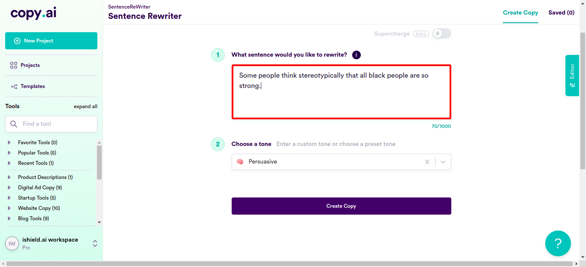check_circle 1:32:43 PM explicitWaitForFieldGetVisible
Wait untill "MakeMore" got visible or upto 30 second(s)
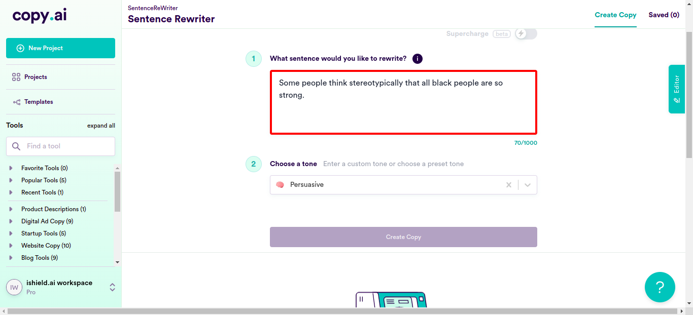check_circle 1:32:51 PM enterData
Entered Value "Everyone, be it a black person or a white person has the same amount of strength." in newsentencefieldcheck_circle 1:32:51 PM explicitWaitForFieldGetVisible
Wait untill "MakeMore" got visible or upto 30 second(s)check_circle 1:33:00 PM enterData
Entered Value "African American employees are not at all likely to arrive late, leave early, and call out sick than other employees." in newsentencefieldcheck_circle 1:33:00 PM explicitWaitForFieldGetVisible
Wait untill "MakeMore" got visible or upto 30 second(s)check_circle 1:33:09 PM enterData
Entered Value "It is a myth that the average African American employee takes an extra 30 minutes for lunch than the average white employee." in newsentencefieldcheck_circle 1:33:09 PM explicitWaitForFieldGetVisible
Wait untill "MakeMore" got visible or upto 30 second(s)check_circle 1:33:18 PM enterData
Entered Value "It is a wrong assumption that a higher percentage of African American employees are absent from work on Fridays than white employees" in newsentencefieldcheck_circle 1:33:18 PM explicitWaitForFieldGetVisible
Wait untill "MakeMore" got visible or upto 30 second(s)check_circle 1:33:27 PM enterData
Entered Value "White employees have a higher rate of promotion, which may be directly correlated with employer's internal biases." in newsentencefieldcheck_circle 1:33:27 PM explicitWaitForFieldGetVisible
Wait untill "MakeMore" got visible or upto 30 second(s)check_circle 1:33:36 PM enterData
Entered Value "African Americans are all not likely to engage in gossip during work hours." in newsentencefieldcheck_circle 1:33:36 PM explicitWaitForFieldGetVisible
Wait untill "MakeMore" got visible or upto 30 second(s)
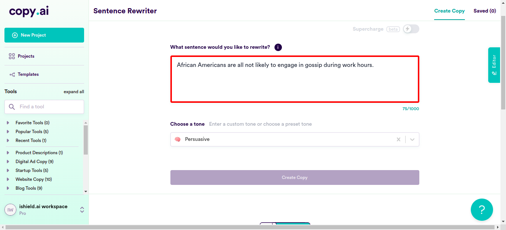check_circle 1:33:44 PM enterData
Entered Value "It is a wrong assumption that White employees exhibit higher productivity rates than African Americans," in newsentencefieldcheck_circle 1:33:45 PM explicitWaitForFieldGetVisible
Wait untill "MakeMore" got visible or upto 30 second(s)check_circle 1:33:53 PM enterData
Entered Value "It is a myth that African Americans are 2 times more likely to be suspended or fired for poor performance than their white colleagues," in newsentencefieldcheck_circle 1:33:54 PM explicitWaitForFieldGetVisible
Wait untill "MakeMore" got visible or upto 30 second(s)
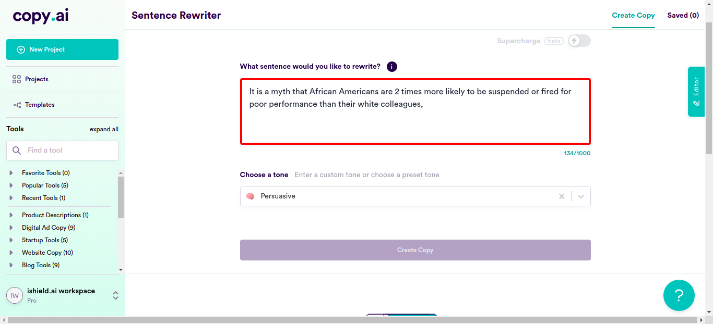check_circle 1:34:03 PM enterData
Entered Value "Although many African Americans come from extremely disadvantaged backgrounds, they are sometimes likely to turn down job offers due to racist attitudes of their employers." in newsentencefieldcheck_circle 1:34:03 PM explicitWaitForFieldGetVisible
Wait untill "MakeMore" got visible or upto 30 second(s)check_circle 1:34:11 PM enterData
Entered Value "African Americans are as productive as any other people." in newsentencefieldcheck_circle 1:34:11 PM explicitWaitForFieldGetVisible
Wait untill "MakeMore" got visible or upto 30 second(s)check_circle 1:34:20 PM enterData
Entered Value "There is enough motivation and drive; good self-esteem and mostly no self-doubt among African Americans" in newsentencefieldcheck_circle 1:34:20 PM explicitWaitForFieldGetVisible
Wait untill "MakeMore" got visible or upto 30 second(s)check_circle 1:34:29 PM enterData
Entered Value "African Americans have more melanin in their skin, but that doesn't mean they must be especially made to work longer hours outside in the summer heat." in newsentencefieldcheck_circle 1:34:29 PM explicitWaitForFieldGetVisible
Wait untill "MakeMore" got visible or upto 30 second(s)check_circle 1:34:38 PM enterData
Entered Value "It is an absolute myth that African Americans are able to generate more body heat than white employees." in newsentencefieldcheck_circle 1:34:38 PM explicitWaitForFieldGetVisible
Wait untill "MakeMore" got visible or upto 30 second(s)check_circle 1:34:46 PM enterData
Entered Value "It is false that African Americans possess greater lung capacity than white employees." in newsentencefieldcheck_circle 1:34:47 PM explicitWaitForFieldGetVisible
Wait untill "MakeMore" got visible or upto 30 second(s)check_circle 1:34:55 PM enterData
Entered Value "It is wrong to assume that African Americans are less likely than white people to get sick from working in dirty environments because they are already exposed to such conditions." in newsentencefieldcheck_circle 1:34:56 PM explicitWaitForFieldGetVisible
Wait untill "MakeMore" got visible or upto 30 second(s)check_circle 1:35:05 PM enterData
Entered Value "African Americans have not at all become dependent on public assistance programs so their incentive to work harder to improve their economic situation has also never been affected." in newsentencefieldcheck_circle 1:35:05 PM explicitWaitForFieldGetVisible
Wait untill "MakeMore" got visible or upto 30 second(s)check_circle 1:35:13 PM enterData
Entered Value "African American employees exhibit as good work ethics as any other employees." in newsentencefieldcheck_circle 1:35:13 PM explicitWaitForFieldGetVisible
Wait untill "MakeMore" got visible or upto 30 second(s)check_circle 1:35:22 PM enterData
Entered Value "Most black people are stereotyped to have come from a broken home." in newsentencefieldcheck_circle 1:35:22 PM explicitWaitForFieldGetVisible
Wait untill "MakeMore" got visible or upto 30 second(s)
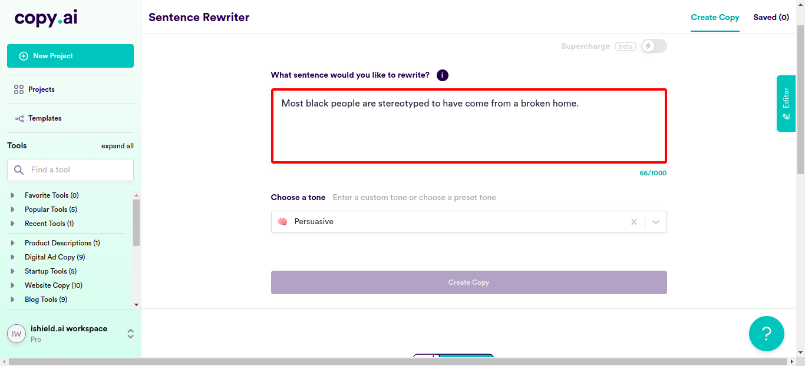check_circle 1:35:31 PM enterData
Entered Value "Black children are no more likely to have been raised by a single mother or father, as the next person." in newsentencefieldcheck_circle 1:35:31 PM explicitWaitForFieldGetVisible
Wait untill "MakeMore" got visible or upto 30 second(s)
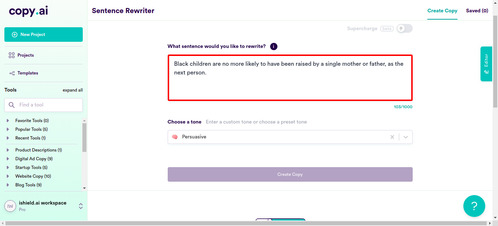check_circle 1:35:40 PM enterData
Entered Value "Black people are not all likely to have come from an urban area with high crime rates and low graduation rates." in newsentencefieldcheck_circle 1:35:40 PM explicitWaitForFieldGetVisible
Wait untill "MakeMore" got visible or upto 30 second(s)check_circle 1:35:49 PM enterData
Entered Value "The problem is some people wrongly think Black people aren't used to being held accountable" in newsentencefieldcheck_circle 1:35:49 PM explicitWaitForFieldGetVisible
Wait untill "MakeMore" got visible or upto 30 second(s)
check_circle 1:35:58 PM enterData
Entered Value "Black employees have a hard time fitting in with the corporate culture, if that culture has inherent biases targeted against them." in newsentencefieldcheck_circle 1:35:58 PM explicitWaitForFieldGetVisible
Wait untill "MakeMore" got visible or upto 30 second(s)check_circle 1:36:06 PM enterData
Entered Value "Black people are no more prone to profanity as the next person." in newsentencefieldcheck_circle 1:36:07 PM explicitWaitForFieldGetVisible
Wait untill "MakeMore" got visible or upto 30 second(s)
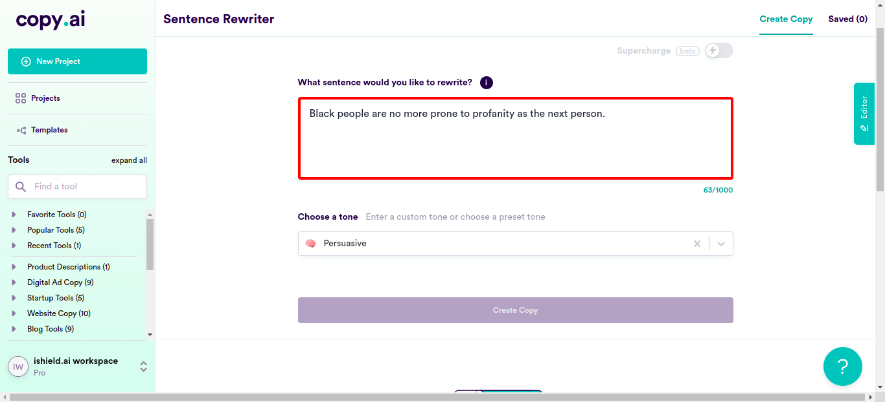check_circle 1:36:15 PM enterData
Entered Value "Black people also work hard to make it to the top" in newsentencefieldcheck_circle 1:36:15 PM explicitWaitForFieldGetVisible
Wait untill "MakeMore" got visible or upto 30 second(s)check_circle 1:36:24 PM enterData
Entered Value "It is a wrong assumption that black workers are more likely to take time off of work for personal reasons, such as court hearings and funeral ceremonies." in newsentencefieldcheck_circle 1:36:24 PM explicitWaitForFieldGetVisible
Wait untill "MakeMore" got visible or upto 30 second(s)check_circle 1:36:33 PM enterData
Entered Value "Black workers take just as long as other people to learn new skills and perform tasks." in newsentencefieldcheck_circle 1:36:33 PM explicitWaitForFieldGetVisible
Wait untill "MakeMore" got visible or upto 30 second(s)
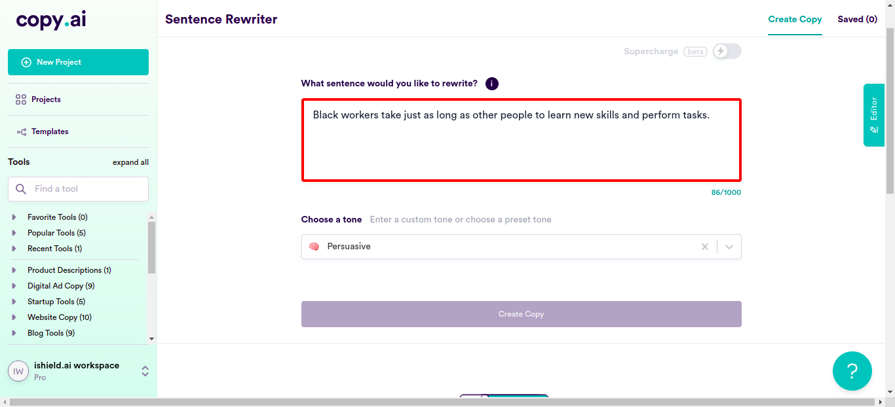check_circle 1:36:42 PM enterData
Entered Value "Some African American employees often remain in the same position for several years without getting promotions because of their employer's inherent biases." in newsentencefieldcheck_circle 1:36:42 PM explicitWaitForFieldGetVisible
Wait untill "MakeMore" got visible or upto 30 second(s)check_circle 1:36:51 PM enterData
Entered Value "Some people wrongly assume that African American workers refuse to take initiative and follow through with projects on their own." in newsentencefieldcheck_circle 1:36:51 PM explicitWaitForFieldGetVisible
Wait untill "MakeMore" got visible or upto 30 second(s)check_circle 1:37:00 PM enterData
Entered Value "To understand why there is a wrong assumption that African Americans exhibit poorer work ethics than white employees" in newsentencefieldcheck_circle 1:37:00 PM explicitWaitForFieldGetVisible
Wait untill "MakeMore" got visible or upto 30 second(s)check_circle 1:37:09 PM enterData
Entered Value "These people from underprivileged communities do understand the importance of hard work, despite having to rely on welfare schemes from time to time." in newsentencefieldcheck_circle 1:37:10 PM explicitWaitForFieldGetVisible
Wait untill "MakeMore" got visible or upto 30 second(s)check_circle 1:37:19 PM enterData
Entered Value "They are willing to learn from their mistakes, but at the same time we need to be aware of the consequences they're suffering because of racism." in newsentencefieldcheck_circle 1:37:19 PM explicitWaitForFieldGetVisible
Wait untill "MakeMore" got visible or upto 30 second(s)check_circle 1:37:28 PM enterData
Entered Value "Some African Americans here are from underprivileged backgrounds but that has never had any effect on their work ethic." in newsentencefieldcheck_circle 1:37:28 PM explicitWaitForFieldGetVisible
Wait untill "MakeMore" got visible or upto 30 second(s)
check_circle 1:37:37 PM enterData
Entered Value "Black people, like everyone elsse have the aptitude for any position, including the ones that require higher levels of learning and technical abilities." in newsentencefieldcheck_circle 1:37:37 PM explicitWaitForFieldGetVisible
Wait untill "MakeMore" got visible or upto 30 second(s)check_circle 1:37:46 PM enterData
Entered Value "People wrongly assume that black workers end up requiring assistance from other coworkers to complete assignments and fulfill job responsibilities" in newsentencefieldcheck_circle 1:37:47 PM explicitWaitForFieldGetVisible
Wait untill "MakeMore" got visible or upto 30 second(s)check_circle 1:37:56 PM enterData
Entered Value "Some people have given into the misconception that black on black crime is higher than white on black crimes" in newsentencefieldcheck_circle 1:37:56 PM explicitWaitForFieldGetVisible
Wait untill "MakeMore" got visible or upto 30 second(s)
check_circle 1:38:05 PM enterData
Entered Value "To make matters worse, there is a misconception that black people commit half of all robberies and two-thirds of all rapes in the United States." in newsentencefieldcheck_circle 1:38:05 PM explicitWaitForFieldGetVisible
Wait untill "MakeMore" got visible or upto 30 second(s)check_circle 1:38:14 PM enterData
Entered Value "It is not true that young black men also commit more crimes than anybody else." in newsentencefieldcheck_circle 1:38:14 PM explicitWaitForFieldGetVisible
Wait untill "MakeMore" got visible or upto 30 second(s)check_circle 1:38:22 PM enterData
Entered Value "Who says you are not black enough?" in newsentencefield
check_circle 1:38:22 PM explicitWaitForFieldGetVisible
Wait untill "MakeMore" got visible or upto 30 second(s)
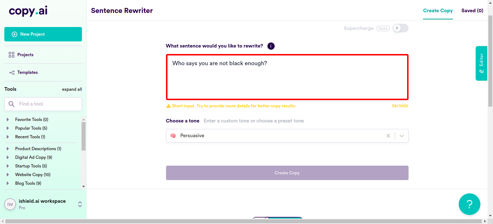check_circle 1:38:32 PM enterData
Entered Value "Unassuming people are more often victims of violence" in newsentencefieldcheck_circle 1:38:32 PM explicitWaitForFieldGetVisible
Wait untill "MakeMore" got visible or upto 30 second(s)
check_circle 1:38:41 PM enterData
Entered Value "we have to look at all involved factors first before we can make unwavering assertions about police brutality." in newsentencefieldcheck_circle 1:38:41 PM explicitWaitForFieldGetVisible
Wait untill "MakeMore" got visible or upto 30 second(s)check_circle 1:38:50 PM enterData
Entered Value "Violence is not a racial trait, so comparing black and white people on that basis is extremely wrong." in newsentencefieldcheck_circle 1:38:50 PM explicitWaitForFieldGetVisible
Wait untill "MakeMore" got visible or upto 30 second(s)check_circle 1:38:59 PM enterData
Entered Value "No one can assert that black or white people, or any race for that matter has a proclivity to kill, and it is also not based on whether someone is a cop or not." in newsentencefieldcheck_circle 1:38:59 PM explicitWaitForFieldGetVisible
Wait untill "MakeMore" got visible or upto 30 second(s)check_circle 1:39:08 PM enterData
Entered Value "affirmative action is intended to do good for people from underprivileged communities." in newsentencefieldcheck_circle 1:39:08 PM explicitWaitForFieldGetVisible
Wait untill "MakeMore" got visible or upto 30 second(s)check_circle 1:39:17 PM enterData
Entered Value "In a diverse setup, white students and students of color, all have their own achievements under an equality based system." in newsentencefieldcheck_circle 1:39:17 PM explicitWaitForFieldGetVisible
Wait untill "MakeMore" got visible or upto 30 second(s)check_circle 1:39:26 PM enterData
Entered Value "It is a false claim that minority students who are admitted under affirmative action standards typically have lower SAT scores" in newsentencefieldcheck_circle 1:39:27 PM explicitWaitForFieldGetVisible
Wait untill "MakeMore" got visible or upto 30 second(s)
check_circle 1:39:35 PM enterData
Entered Value "affirmative action is not at all another form of segregation." in newsentencefieldcheck_circle 1:39:36 PM explicitWaitForFieldGetVisible
Wait untill "MakeMore" got visible or upto 30 second(s)check_circle 1:39:44 PM enterData
Entered Value "Affirmative action and segregation cannot, and shoul never be compared with one another." in newsentencefield
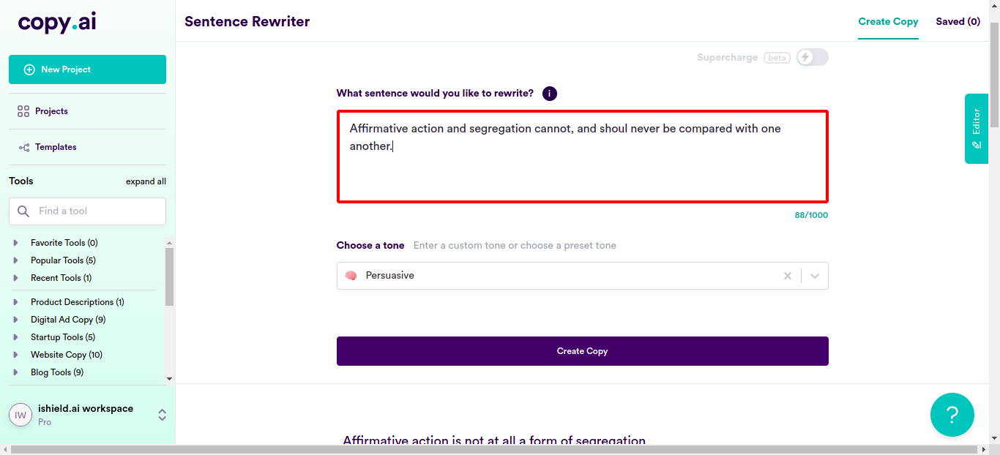check_circle 1:39:44 PM explicitWaitForFieldGetVisible
Wait untill "MakeMore" got visible or upto 30 second(s)check_circle 1:39:54 PM enterData
Entered Value "While segregation prevented certain people from having access to certain things, affirmative action actually only ensures that underprivileged sections get a fair chance at life." in newsentencefield
check_circle 1:39:54 PM explicitWaitForFieldGetVisible
Wait untill "MakeMore" got visible or upto 30 second(s)check_circle 1:40:03 PM enterData
Entered Value "Affirmative action is aimed at mitigating the effects of systemic racism and sexism." in newsentencefieldcheck_circle 1:40:03 PM explicitWaitForFieldGetVisible
Wait untill "MakeMore" got visible or upto 30 second(s)check_circle 1:40:13 PM enterData
Entered Value "Affirmative action never discounts individual merit and character, so non-minority groups also have nothing to fear about losing their deserved oppurtunities." in newsentencefieldcheck_circle 1:40:13 PM explicitWaitForFieldGetVisible
Wait untill "MakeMore" got visible or upto 30 second(s)check_circle 1:40:22 PM enterData
Entered Value "By giving minority groups an extra advantage during college admissions or job hiring,it is only to ensure that they are not left behind because of sytemic racism and sexism." in newsentencefieldcheck_circle 1:40:23 PM explicitWaitForFieldGetVisible
Wait untill "MakeMore" got visible or upto 30 second(s)
check_circle 1:40:31 PM enterData
Entered Value "Affirmative action does no harm to anyone, so it not a form of discrimination." in newsentencefieldcheck_circle 1:40:32 PM explicitWaitForFieldGetVisible
Wait untill "MakeMore" got visible or upto 30 second(s)check_circle 1:40:41 PM enterData
Entered Value "Affirmative action does not promote an atmosphere in which people are not judged on their own merits, but rather, on their race or ethnicity." in newsentencefieldcheck_circle 1:40:41 PM explicitWaitForFieldGetVisible
Wait untill "MakeMore" got visible or upto 30 second(s)check_circle 1:40:51 PM enterData
Entered Value "The case that critics have made against affirmative action rests on two primary arguments: 1) that it is unfair discrimination; 2) that it promotes diversity at the expense of meritocracy." in newsentencefieldcheck_circle 1:40:51 PM explicitWaitForFieldGetVisible
Wait untill "MakeMore" got visible or upto 30 second(s)check_circle 1:41:00 PM enterData
Entered Value "affirmative action policies do not reward students by providing admission preference or financial aid solely on the basis of race and ethnicity." in newsentencefieldcheck_circle 1:41:00 PM explicitWaitForFieldGetVisible
Wait untill "MakeMore" got visible or upto 30 second(s)check_circle 1:41:10 PM enterData
Entered Value "Affirmative action does take into account the socioeconomic status of applicants and also measures merit." in newsentencefieldcheck_circle 1:41:10 PM explicitWaitForFieldGetVisible
Wait untill "MakeMore" got visible or upto 30 second(s)check_circle 1:41:19 PM enterData
Entered Value "affirmative action, never turns into ""reverse discrimination"" against members of the majority group." in newsentencefieldcheck_circle 1:41:19 PM explicitWaitForFieldGetVisible
Wait untill "MakeMore" got visible or upto 30 second(s)check_circle 1:41:29 PM enterData
Entered Value "It's becoming increasingly difficult for students who have worked hard all through school and gotten great grades to get into competitive colleges because of increased scrutinising of their grades in these few years." in newsentencefieldcheck_circle 1:41:29 PM explicitWaitForFieldGetVisible
Wait untill "MakeMore" got visible or upto 30 second(s)check_circle 1:41:39 PM enterData
Entered Value "Affirmative action does not rest on the assumption that a person's race is a defining factor in their life experience." in newsentencefieldcheck_circle 1:41:39 PM explicitWaitForFieldGetVisible
Wait untill "MakeMore" got visible or upto 30 second(s)
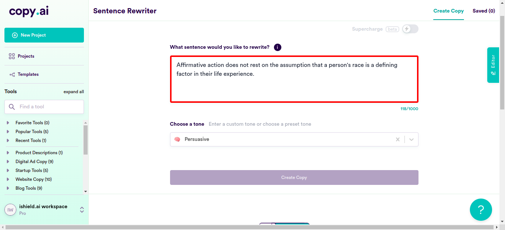check_circle 1:41:48 PM enterData
Entered Value "Affirmative action does not use race as the main factor in determining whether or not students are accepted into college." in newsentencefield
check_circle 1:41:48 PM explicitWaitForFieldGetVisible
Wait untill "MakeMore" got visible or upto 30 second(s)check_circle 1:41:57 PM enterData
Entered Value "black men are not inherently dangerous." in newsentencefield
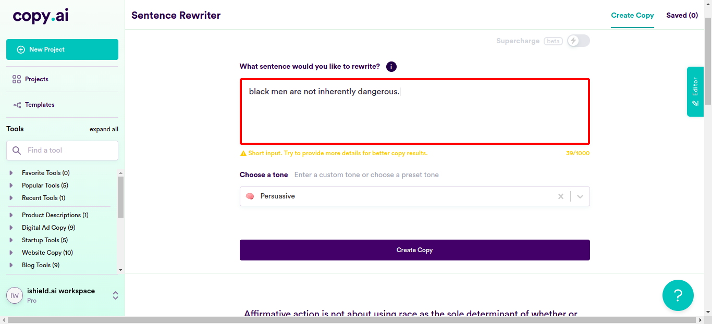check_circle 1:41:57 PM explicitWaitForFieldGetVisible
Wait untill "MakeMore" got visible or upto 30 second(s)check_circle 1:42:06 PM enterData
Entered Value "the increase in the number of black men means never correlates to an increase in violence and crime." in newsentencefieldcheck_circle 1:42:06 PM explicitWaitForFieldGetVisible
Wait untill "MakeMore" got visible or upto 30 second(s)
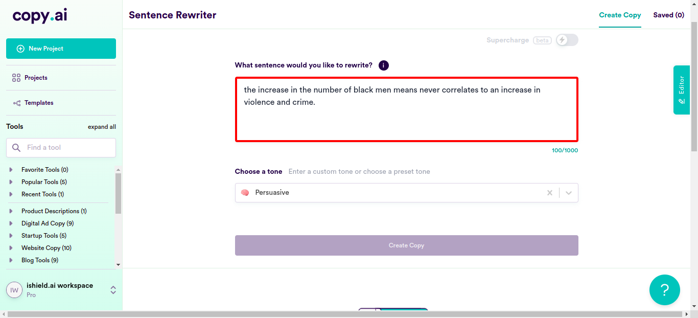check_circle 1:42:15 PM enterData
Entered Value "Black men do not have an innate propensity for violence." in newsentencefieldcheck_circle 1:42:15 PM explicitWaitForFieldGetVisible
Wait untill "MakeMore" got visible or upto 30 second(s)check_circle 1:42:24 PM enterData
Entered Value "All black men were not responsible for any of the deaths caused by mass shootings in Las Vegas and Texas," in newsentencefieldcheck_circle 1:42:24 PM explicitWaitForFieldGetVisible
Wait untill "MakeMore" got visible or upto 30 second(s)check_circle 1:42:33 PM enterData
Entered Value "black men are not prone to extreme violence." in newsentencefieldcheck_circle 1:42:33 PM explicitWaitForFieldGetVisible
Wait untill "MakeMore" got visible or upto 30 second(s)check_circle 1:42:41 PM enterData
Entered Value "Black men do not have a propensity for violence." in newsentencefieldcheck_circle 1:42:41 PM explicitWaitForFieldGetVisible
Wait untill "MakeMore" got visible or upto 30 second(s)check_circle 1:42:50 PM enterData
Entered Value "Black men do not have either a propensity, or even an innate capacity for violence." in newsentencefieldcheck_circle 1:42:51 PM explicitWaitForFieldGetVisible
Wait untill "MakeMore" got visible or upto 30 second(s)
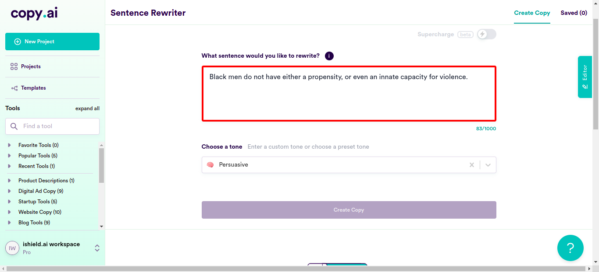check_circle 1:43:00 PM enterData
Entered Value "Some black men are stronger than most people, but that doesn't at all mean that they are more aggressive, and more predisposed to violence than women." in newsentencefieldcheck_circle 1:43:00 PM explicitWaitForFieldGetVisible
Wait untill "MakeMore" got visible or upto 30 second(s)check_circle 1:43:10 PM enterData
Entered Value "It is completely false that black men are well represented among murderers and other violent criminals in the U.S." in newsentencefieldcheck_circle 1:43:10 PM explicitWaitForFieldGetVisible
Wait untill "MakeMore" got visible or upto 30 second(s)check_circle 1:43:19 PM enterData
Entered Value "There are parts of the world where black men are the majority, and you know what? Those places are not dangerous." in newsentencefieldcheck_circle 1:43:19 PM explicitWaitForFieldGetVisible
Wait untill "MakeMore" got visible or upto 30 second(s)check_circle 1:43:28 PM enterData
Entered Value "Some of these black men may be violent criminals, but that doesn't justify generalising all black men to be the same." in newsentencefieldcheck_circle 1:43:29 PM explicitWaitForFieldGetVisible
Wait untill "MakeMore" got visible or upto 30 second(s)check_circle 1:43:37 PM enterData
Entered Value "What is it about black men that makes people assume that the are violent?" in newsentencefieldcheck_circle 1:43:38 PM explicitWaitForFieldGetVisible
Wait untill "MakeMore" got visible or upto 30 second(s)check_circle 1:43:47 PM enterData
Entered Value "Black neighbourhoods are clean and safe, just like any other part of the town," in newsentencefieldcheck_circle 1:43:47 PM explicitWaitForFieldGetVisible
Wait untill "MakeMore" got visible or upto 30 second(s)check_circle 1:43:56 PM enterData
Entered Value "They come from that part of the town that once used to have fewer houses, but now there are a lot of occupants." in newsentencefieldcheck_circle 1:43:56 PM explicitWaitForFieldGetVisible
Wait untill "MakeMore" got visible or upto 30 second(s)check_circle 1:44:06 PM enterData
Entered Value "Women are most likely to fear walking alone at night because they are afraid of being sexually assaulted or robbed by bad people." in newsentencefieldcheck_circle 1:44:06 PM explicitWaitForFieldGetVisible
Wait untill "MakeMore" got visible or upto 30 second(s)check_circle 1:44:15 PM enterData
Entered Value "It is a false claim that black men mostly die of gang violence than of old age." in newsentencefieldcheck_circle 1:44:15 PM explicitWaitForFieldGetVisible
Wait untill "MakeMore" got visible or upto 30 second(s)check_circle 1:44:24 PM enterData
Entered Value "The Black youth are not misguided by the Liberals and the rappers." in newsentencefieldcheck_circle 1:44:24 PM explicitWaitForFieldGetVisible
Wait untill "MakeMore" got visible or upto 30 second(s)
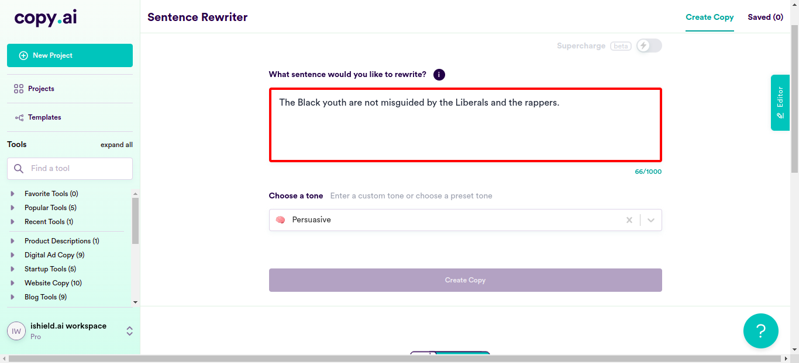check_circle 1:44:35 PM enterData
Entered Value "We have seen what happens when we allow them to live amongst us, in our schools and in our homes, with no restrictions: they become some of our closest and trsuted freinds, so that itself is proof that we should never go back to the days of segregation." in newsentencefield
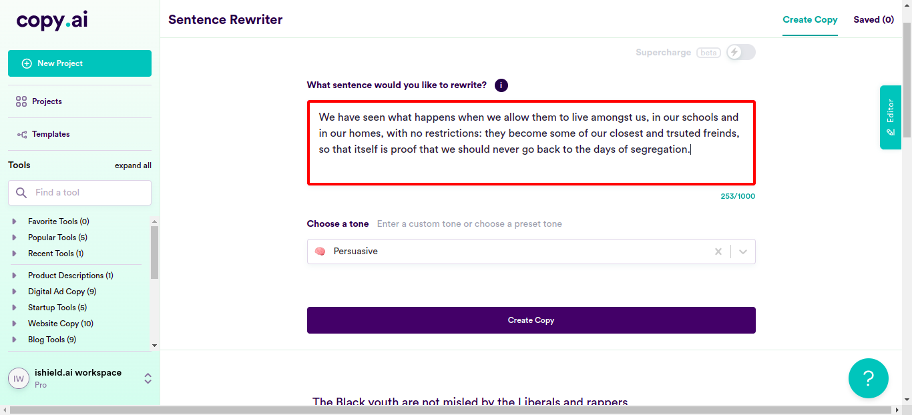check_circle 1:44:35 PM explicitWaitForFieldGetVisible
Wait untill "MakeMore" got visible or upto 30 second(s)
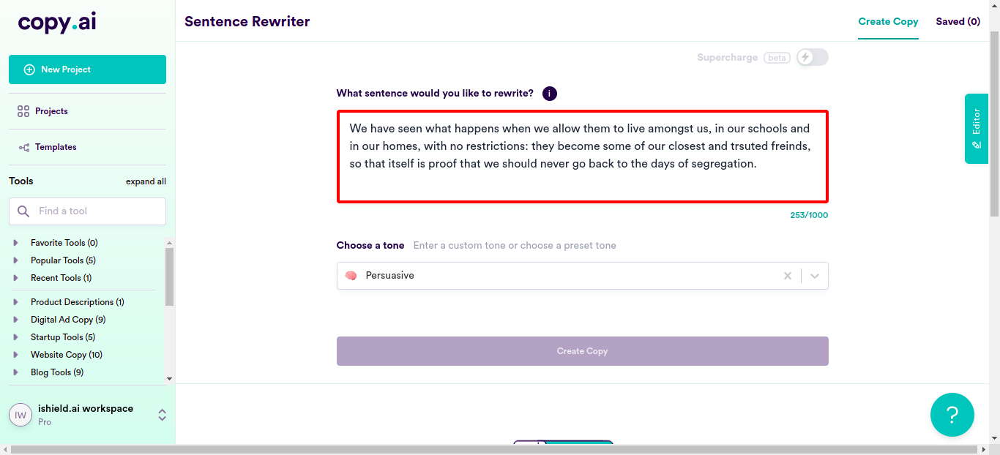check_circle 1:44:44 PM enterData
Entered Value "He was Black, but that was never an indication to how his character as a person is." in newsentencefieldcheck_circle 1:44:44 PM explicitWaitForFieldGetVisible
Wait untill "MakeMore" got visible or upto 30 second(s)check_circle 1:44:53 PM enterData
Entered Value "If you're walking down the street in the dark, you should be afraid of people with ill intentions." in newsentencefield
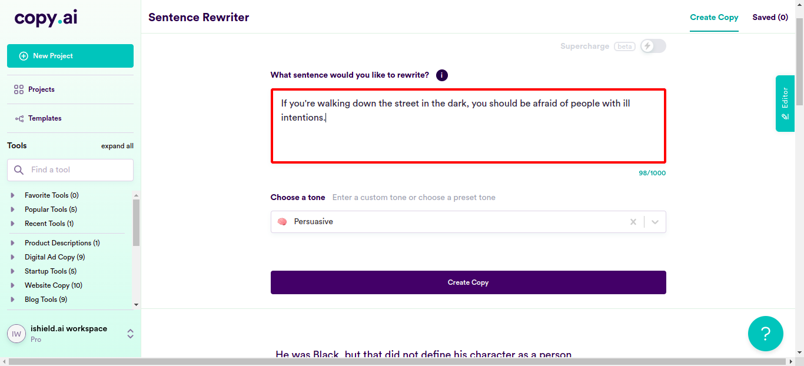check_circle 1:44:54 PM explicitWaitForFieldGetVisible
Wait untill "MakeMore" got visible or upto 30 second(s)
check_circle 1:45:03 PM enterData
Entered Value "When I walk down the street at night, and a black man walks toward me, I don't at all feel worried." in newsentencefield
check_circle 1:45:03 PM explicitWaitForFieldGetVisible
Wait untill "MakeMore" got visible or upto 30 second(s)check_circle 1:45:13 PM enterData
Entered Value "It is a false claim that white police officers are more likely to be attacked by a black person than to attack a black person." in newsentencefieldcheck_circle 1:45:13 PM explicitWaitForFieldGetVisible
Wait untill "MakeMore" got visible or upto 30 second(s)check_circle 1:45:22 PM enterData
Entered Value "these Black youth on the street are not walking around with guns and selling drugs." in newsentencefieldcheck_circle 1:45:22 PM explicitWaitForFieldGetVisible
Wait untill "MakeMore" got visible or upto 30 second(s)check_circle 1:45:32 PM enterData
Entered Value "These minority kids are just looking to get a good education so as to better serve their communities in the future." in newsentencefieldcheck_circle 1:45:32 PM explicitWaitForFieldGetVisible
Wait untill "MakeMore" got visible or upto 30 second(s)check_circle 1:45:42 PM enterData
Entered Value "It is a wrongful assumption that of the 12 million arrests made in the United States each year, black men are responsible for 7.5 million of them." in newsentencefieldcheck_circle 1:45:42 PM explicitWaitForFieldGetVisible
Wait untill "MakeMore" got visible or upto 30 second(s)check_circle 1:45:51 PM enterData
Entered Value "A Black person is wrongly assumed to be more likely to have had drugs atleast once in a lifetime." in newsentencefieldcheck_circle 1:45:52 PM explicitWaitForFieldGetVisible
Wait untill "MakeMore" got visible or upto 30 second(s)check_circle 1:46:00 PM enterData
Entered Value "Black people do not have victimhood mentality." in newsentencefieldcheck_circle 1:46:00 PM explicitWaitForFieldGetVisible
Wait untill "MakeMore" got visible or upto 30 second(s)check_circle 1:46:10 PM enterData
Entered Value "Racism exists. Of course it does. So, don't say that this is the most privileged generation of Blacks in history, and that they should appreciate that." in newsentencefieldcheck_circle 1:46:10 PM explicitWaitForFieldGetVisible
Wait untill "MakeMore" got visible or upto 30 second(s)check_circle 1:46:20 PM enterData
Entered Value "Even if slavery was like 200 years ago, its effects still persists in society, so don't ask people to get over it just like that." in newsentencefieldcheck_circle 1:46:20 PM explicitWaitForFieldGetVisible
Wait untill "MakeMore" got visible or upto 30 second(s)check_circle 1:46:30 PM enterData
Entered Value "Black people are not being left behind in society, and it is not at all true that they refuse to stop thinking of themselves as victims." in newsentencefieldcheck_circle 1:46:31 PM explicitWaitForFieldGetVisible
Wait untill "MakeMore" got visible or upto 30 second(s)check_circle 1:46:40 PM enterData
Entered Value "Black rappers are not misleading the youth by enticing them to sex and violence." in newsentencefieldcheck_circle 1:46:40 PM explicitWaitForFieldGetVisible
Wait untill "MakeMore" got visible or upto 30 second(s)check_circle 1:46:49 PM enterData
Entered Value "Black people are not at all constantly complaining about how they were oppressed by white people." in newsentencefieldcheck_circle 1:46:49 PM explicitWaitForFieldGetVisible
Wait untill "MakeMore" got visible or upto 30 second(s)check_circle 1:46:59 PM enterData
Entered Value "Black people have never played the victim card, and they've always taken responsibility for their lives." in newsentencefieldcheck_circle 1:46:59 PM explicitWaitForFieldGetVisible
Wait untill "MakeMore" got visible or upto 30 second(s)check_circle 1:47:08 PM enterData
Entered Value "Black people do not like to paint themselves as victims in every situation." in newsentencefieldcheck_circle 1:47:08 PM explicitWaitForFieldGetVisible
Wait untill "MakeMore" got visible or upto 30 second(s)check_circle 1:47:18 PM enterData
Entered Value "It is a wrong claim that black people, who make up just 13% of the population, commit roughly half of all murders in the United States." in newsentencefieldcheck_circle 1:47:18 PM explicitWaitForFieldGetVisible
Wait untill "MakeMore" got visible or upto 30 second(s)check_circle 1:47:28 PM enterData
Entered Value "a black person is not any likely to be killed by another black person than by any one else." in newsentencefieldcheck_circle 1:47:28 PM explicitWaitForFieldGetVisible
Wait untill "MakeMore" got visible or upto 30 second(s)check_circle 1:47:37 PM enterData
Entered Value "It is completely false that blacks kill at a rate more than eight times higher than whites!" in newsentencefieldcheck_circle 1:47:37 PM explicitWaitForFieldGetVisible
Wait untill "MakeMore" got visible or upto 30 second(s)check_circle 1:47:48 PM enterData
Entered Value "Black people are not always complaining about what happened back in the day, but only pointing out how the mistakes of the past are still having effects on the society of this day and age." in newsentencefieldcheck_circle 1:47:48 PM explicitWaitForFieldGetVisible
Wait untill "MakeMore" got visible or upto 30 second(s)
check_circle 1:47:57 PM enterData
Entered Value "Ive never seen black people say that white people are the ones who have victim-hood mentality." in newsentencefieldcheck_circle 1:47:58 PM explicitWaitForFieldGetVisible
Wait untill "MakeMore" got visible or upto 30 second(s)check_circle 1:48:07 PM enterData
Entered Value "Black people are capable of being happy or successful , and it is a misconception that they are resentful towards white people." in newsentencefieldcheck_circle 1:48:08 PM explicitWaitForFieldGetVisible
Wait untill "MakeMore" got visible or upto 30 second(s)check_circle 1:48:18 PM enterData
Entered Value "White privilege is not something made up to make white people feel guilty, and it is definitely not an excuse for poor behavior from minorities." in newsentencefieldcheck_circle 1:48:18 PM explicitWaitForFieldGetVisible
Wait untill "MakeMore" got visible or upto 30 second(s)
check_circle 1:48:27 PM enterData
Entered Value "It is wrong to say that they know they can get away with it due to their race" in newsentencefieldcheck_circle 1:48:27 PM explicitWaitForFieldGetVisible
Wait untill "MakeMore" got visible or upto 30 second(s)check_circle 1:48:37 PM enterData
Entered Value "The idea that white people have advantages that black people is true at many levels, and it can be traced back to people's inherent biases." in newsentencefieldcheck_circle 1:48:38 PM explicitWaitForFieldGetVisible
Wait untill "MakeMore" got visible or upto 30 second(s)check_circle 1:48:50 PM enterData
Entered Value "For example, when I was a child, I often wondered why my parents were such lazy slobs who didn't do anything but watch television all day and sleep on the couch in their underwear. It's only recently that I've come to understand that this was not at all a result of their being white, but just how they were as individuals." in newsentencefieldcheck_circle 1:48:50 PM explicitWaitForFieldGetVisible
Wait untill "MakeMore" got visible or upto 30 second(s)
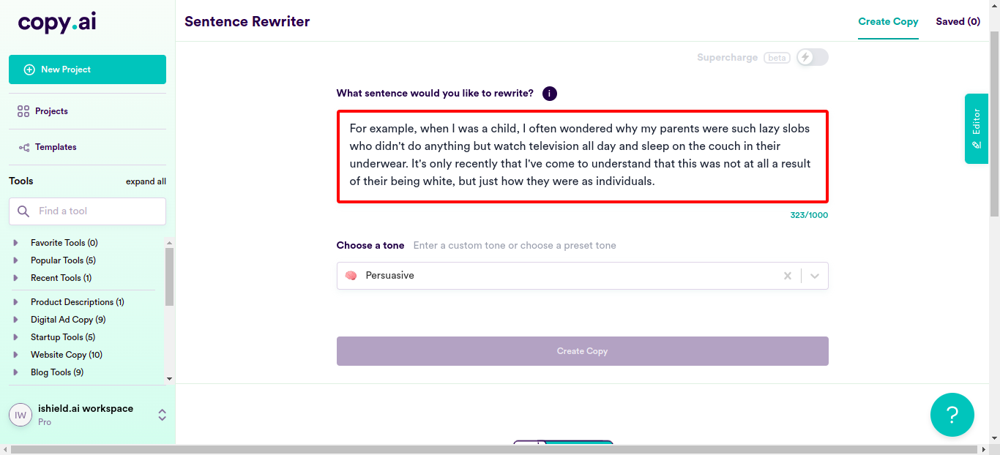check_circle 1:49:01 PM enterData
Entered Value "I wrongly assumed that they wanted me to remain poor and dumb so that I could continue the cycle of poverty that plagues white people and keeps them from achieving their dreams." in newsentencefieldcheck_circle 1:49:01 PM explicitWaitForFieldGetVisible
Wait untill "MakeMore" got visible or upto 30 second(s)check_circle 1:49:11 PM enterData
Entered Value "The idea of white privilege is not perpetuated by the black people, but is based on systemic racism and its effects on society." in newsentencefieldcheck_circle 1:49:11 PM explicitWaitForFieldGetVisible
Wait untill "MakeMore" got visible or upto 30 second(s)check_circle 1:49:22 PM enterData
Entered Value "The idea of ""white privilege"" has not been perpetuated by black people, and it is definitely not anyone's intetion to try and make white people feel guilty and start a war." in newsentencefieldcheck_circle 1:49:22 PM explicitWaitForFieldGetVisible
Wait untill "MakeMore" got visible or upto 30 second(s)check_circle 1:49:32 PM enterData
Entered Value "let's stop coming up with derogatory terms like "black poor-me propaganda pieces" and talk directly to each other." in newsentencefieldcheck_circle 1:49:32 PM explicitWaitForFieldGetVisible
Wait untill "MakeMore" got visible or upto 30 second(s)
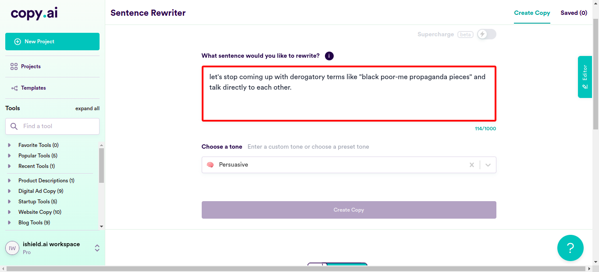check_circle 1:49:43 PM enterData
Entered Value "Black people do not benefit from having black skin, so please don't wrongly assume that it makes them immune to criminal charges or gets them jobs based on nothing but their race." in newsentencefieldcheck_circle 1:49:43 PM explicitWaitForFieldGetVisible
Wait untill "MakeMore" got visible or upto 30 second(s)check_circle 1:49:53 PM enterData
Entered Value "The idea of white privilege is not a myth, and it is a misconception that it has been perpetuated by black people to absolve themselves of their laziness." in newsentencefieldcheck_circle 1:49:54 PM explicitWaitForFieldGetVisible
Wait untill "MakeMore" got visible or upto 30 second(s)check_circle 1:50:05 PM enterData
Entered Value "Black people have definitely suffered from slavery, and all the problems in the black community today can be traced back to the systemic effects of racist attitudes that began from that day itself." in newsentencefieldcheck_circle 1:50:05 PM explicitWaitForFieldGetVisible
Wait untill "MakeMore" got visible or upto 30 second(s)check_circle 1:50:15 PM enterData
Entered Value "Black communities are not made up of violent criminals who hate white people and just want to make them pay for some imagined injustice." in newsentencefieldcheck_circle 1:50:15 PM explicitWaitForFieldGetVisible
Wait untill "MakeMore" got visible or upto 30 second(s)check_circle 1:50:26 PM enterData
Entered Value "Black people have been oppressed in this country, so it is only fair that they are given a chance to express how they feel about it as well." in newsentencefieldcheck_circle 1:50:26 PM explicitWaitForFieldGetVisible
Wait untill "MakeMore" got visible or upto 30 second(s)check_circle 1:50:37 PM enterData
Entered Value "It is not true that they are complaining because they are wishing for sympathy from white liberals, and neither are they thinking that they are the only victims of oppression in this country." in newsentencefieldcheck_circle 1:50:37 PM explicitWaitForFieldGetVisible
Wait untill "MakeMore" got visible or upto 30 second(s)check_circle 1:50:48 PM enterData
Entered Value "when blacks came to power, they promised to fix the country's economy and make life better for black people. They've done a pretty good job so far- look at us now!" in newsentencefieldcheck_circle 1:50:48 PM explicitWaitForFieldGetVisible
Wait untill "MakeMore" got visible or upto 30 second(s)check_circle 1:50:58 PM enterData
Entered Value "When I arrived, the town was run down and mostly abandoned, but now that the blacks have been moved into it, it appears to be thriving." in newsentencefieldcheck_circle 1:50:58 PM explicitWaitForFieldGetVisible
Wait untill "MakeMore" got visible or upto 30 second(s)check_circle 1:51:06 PM enterData
Entered Value "" in newsentencefieldcheck_circle 1:51:11 PM enterData
Entered Value "Blacks were once discouraged from selling their own goods. But then they were allowed to sell goods, and look how successful many are!" in newsentencefieldcheck_circle 1:51:11 PM explicitWaitForFieldGetVisible
Wait untill "MakeMore" got visible or upto 30 second(s)check_circle 1:51:19 PM enterData
Entered Value "" in newsentencefield
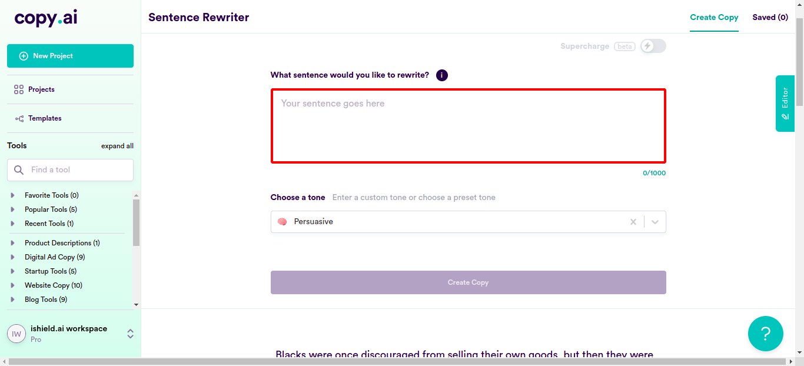check_circle 1:51:23 PM enterData
Entered Value "Blacks have contributed much to this country, and today, we reap the benefits of their contributions." in newsentencefieldcheck_circle 1:51:23 PM explicitWaitForFieldGetVisible
Wait untill "MakeMore" got visible or upto 30 second(s)
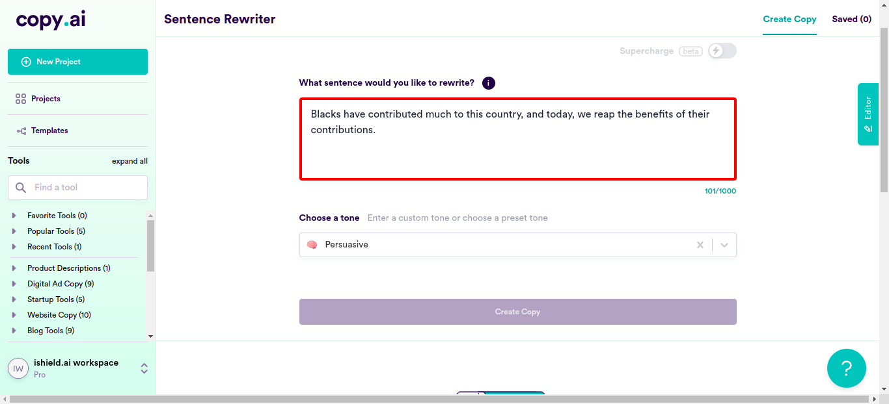check_circle 1:51:31 PM enterData
Entered Value "" in newsentencefield
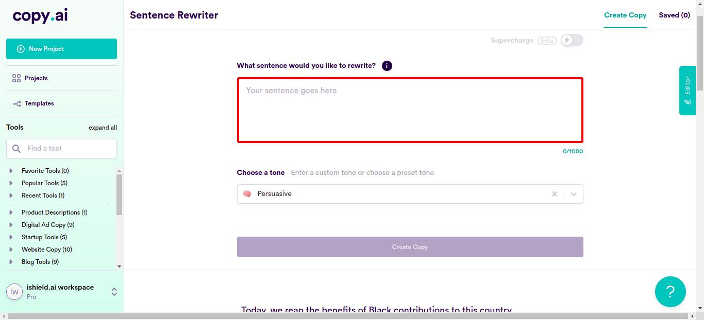check_circle 1:51:35 PM enterData
Entered Value "Recent immigrants of every ethnicity are thriving in the United States." in newsentencefieldcheck_circle 1:51:35 PM explicitWaitForFieldGetVisible
Wait untill "MakeMore" got visible or upto 30 second(s)check_circle 1:51:43 PM enterData
Entered Value "" in newsentencefieldcheck_circle 1:51:46 PM enterData
Entered Value "Before the 1960s blacks were not allowed in amusement parks. Now they are." in newsentencefield
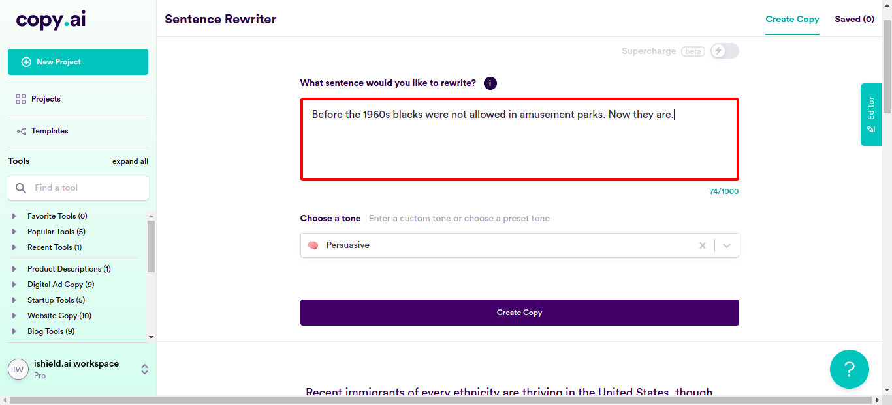check_circle 1:51:46 PM explicitWaitForFieldGetVisible
Wait untill "MakeMore" got visible or upto 30 second(s)
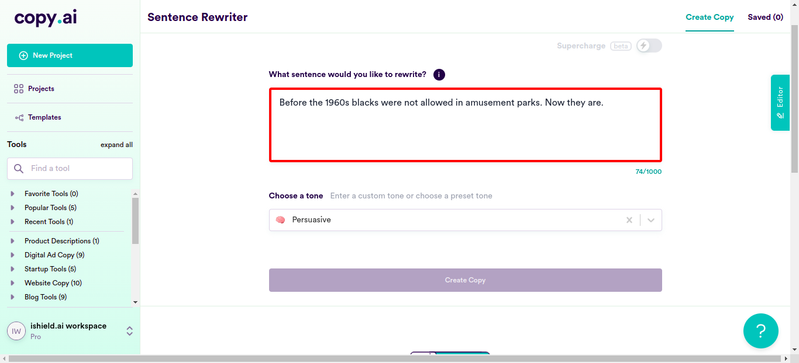check_circle 1:51:54 PM enterData
Entered Value "" in newsentencefieldcheck_circle 1:52:02 PM enterData
Entered Value "In an effort to revive failing public schools, the Democratic politicians of Washington, D.C. opened up the school system to control by private interests—led by corporate executives and “educators” like Michelle Rhee–– in 2001. This change has led to the deterioration of the school system that was once the envy of America." in newsentencefield
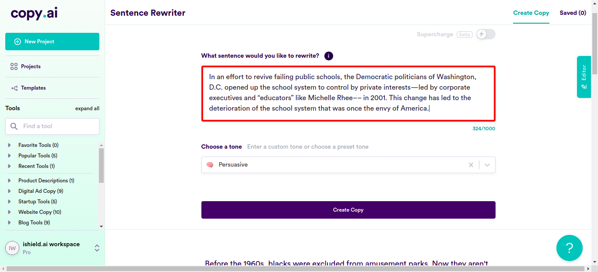check_circle 1:52:02 PM explicitWaitForFieldGetVisible
Wait untill "MakeMore" got visible or upto 30 second(s)check_circle 1:52:10 PM enterData
Entered Value "" in newsentencefieldcheck_circle 1:52:13 PM enterData
Entered Value "" in newsentencefieldcheck_circle 1:52:17 PM enterData
Entered Value "Black people are not victims because they feel victimized—they are victims because they are constantly being victimized by white supremacy" in newsentencefieldcheck_circle 1:52:17 PM explicitWaitForFieldGetVisible
Wait untill "MakeMore" got visible or upto 30 second(s)
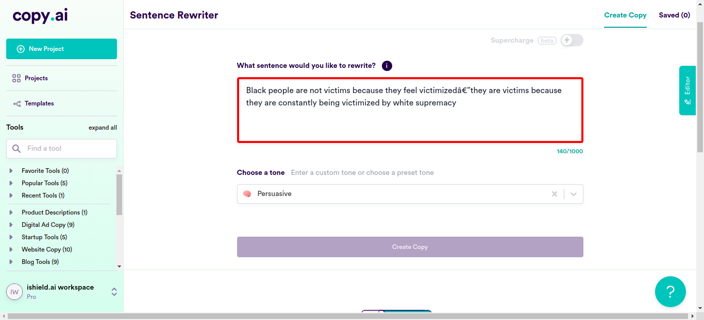check_circle 1:52:27 PM enterData
Entered Value "I do know that plenty of black people are victims of being treated like second-class citizens because they're black." in newsentencefieldcheck_circle 1:52:28 PM explicitWaitForFieldGetVisible
Wait untill "MakeMore" got visible or upto 30 second(s)check_circle 1:52:40 PM enterData
Entered Value "I'm not saying that every black person is a victim. But from my experience, most of them are." in newsentencefieldcheck_circle 1:52:40 PM explicitWaitForFieldGetVisible
Wait untill "MakeMore" got visible or upto 30 second(s)check_circle 1:52:49 PM enterData
Entered Value "A lack of empathy is stopping black people from getting ahead in life." in newsentencefieldcheck_circle 1:52:50 PM explicitWaitForFieldGetVisible
Wait untill "MakeMore" got visible or upto 30 second(s)check_circle 1:53:00 PM enterData
Entered Value "There are many hardworking Black people who work numerous jobs to provide for their families and go to college at the same time." in newsentencefieldcheck_circle 1:53:00 PM explicitWaitForFieldGetVisible
Wait untill "MakeMore" got visible or upto 30 second(s)check_circle 1:53:10 PM enterData
Entered Value "There are many successful Black business owners who made it on their own without help from the government or anyone" in newsentencefieldcheck_circle 1:53:10 PM explicitWaitForFieldGetVisible
Wait untill "MakeMore" got visible or upto 30 second(s)
check_circle 1:53:20 PM enterData
Entered Value "The poverty rate for blacks is 27%, compared to 8% for whites." in newsentencefieldcheck_circle 1:53:20 PM explicitWaitForFieldGetVisible
Wait untill "MakeMore" got visible or upto 30 second(s)check_circle 1:53:29 PM enterData
Entered Value "Victimhood is an ongoing dynamic between a person and the environment." in newsentencefieldcheck_circle 1:53:29 PM explicitWaitForFieldGetVisible
Wait untill "MakeMore" got visible or upto 30 second(s)check_circle 1:53:39 PM enterData
Entered Value "Victimhood is a process that people get into, and it's also a process that people get out of." in newsentencefieldcheck_circle 1:53:39 PM explicitWaitForFieldGetVisible
Wait untill "MakeMore" got visible or upto 30 second(s)check_circle 1:53:50 PM enterData
Entered Value "The victim experience is one in which a person has given up their power to call the shots in their life and has instead handed over their power to some force outside themselves." in newsentencefield
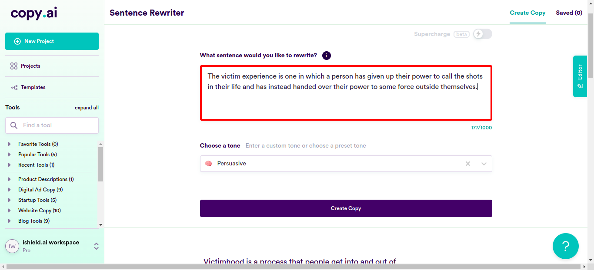check_circle 1:53:51 PM explicitWaitForFieldGetVisible
Wait untill "MakeMore" got visible or upto 30 second(s)check_circle 1:54:00 PM enterData
Entered Value "Black parents like to tell their children about the past" in newsentencefieldcheck_circle 1:54:00 PM explicitWaitForFieldGetVisible
Wait untill "MakeMore" got visible or upto 30 second(s)check_circle 1:54:10 PM enterData
Entered Value "This can be a positive thing for black people because it reminds them of where they came from" in newsentencefieldcheck_circle 1:54:10 PM explicitWaitForFieldGetVisible
Wait untill "MakeMore" got visible or upto 30 second(s)check_circle 1:54:19 PM enterData
Entered Value "Black people are systematically or culturally victims" in newsentencefieldcheck_circle 1:54:19 PM explicitWaitForFieldGetVisible
Wait untill "MakeMore" got visible or upto 30 second(s)check_circle 1:54:29 PM enterData
Entered Value "It's wrong because what it does is it absolves white people of responsibility for the racism that exists in America today." in newsentencefield
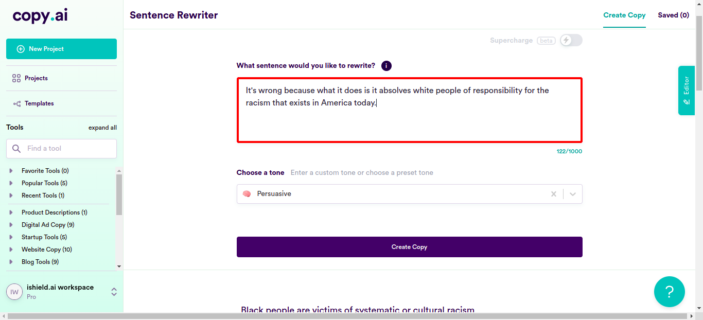check_circle 1:54:29 PM explicitWaitForFieldGetVisible
Wait untill "MakeMore" got visible or upto 30 second(s)check_circle 1:54:40 PM enterData
Entered Value "It's also wrong because it makes Black people into perpetual victims, with no agency to change their own lives or circumstances." in newsentencefieldcheck_circle 1:54:40 PM explicitWaitForFieldGetVisible
Wait untill "MakeMore" got visible or upto 30 second(s)check_circle 1:54:50 PM enterData
Entered Value "it's wrong because it distorts reality and obscures the truth about who is really benefiting from racism today: white people" in newsentencefieldcheck_circle 1:54:50 PM explicitWaitForFieldGetVisible
Wait untill "MakeMore" got visible or upto 30 second(s)check_circle 1:55:00 PM enterData
Entered Value "Black people are the least privileged people in this country, and we have been for centuries." in newsentencefieldcheck_circle 1:55:00 PM explicitWaitForFieldGetVisible
Wait untill "MakeMore" got visible or upto 30 second(s)check_circle 1:55:10 PM enterData
Entered Value "even if a black person has achieved a high degree of personal, professional, and financial success, she is still a victim." in newsentencefieldcheck_circle 1:55:11 PM explicitWaitForFieldGetVisible
Wait untill "MakeMore" got visible or upto 30 second(s)check_circle 1:55:20 PM enterData
Entered Value "She is still less privileged than any white person with her same level of status and achievements." in newsentencefieldcheck_circle 1:55:21 PM explicitWaitForFieldGetVisible
Wait untill "MakeMore" got visible or upto 30 second(s)check_circle 1:55:30 PM enterData
Entered Value "Throughout history, black people have been the victims of racial hatred and oppression" in newsentencefieldcheck_circle 1:55:31 PM explicitWaitForFieldGetVisible
Wait untill "MakeMore" got visible or upto 30 second(s)check_circle 1:55:41 PM enterData
Entered Value "From the time of slavery, through the civil rights movement, and into today, African Americans have had to overcome immense obstacles." in newsentencefieldcheck_circle 1:55:42 PM explicitWaitForFieldGetVisible
Wait untill "MakeMore" got visible or upto 30 second(s)check_circle 1:55:51 PM enterData
Entered Value "In the antebellum South, black people were kept as slaves and not allowed to learn to read or write. T" in newsentencefieldcheck_circle 1:55:52 PM explicitWaitForFieldGetVisible
Wait untill "MakeMore" got visible or upto 30 second(s)
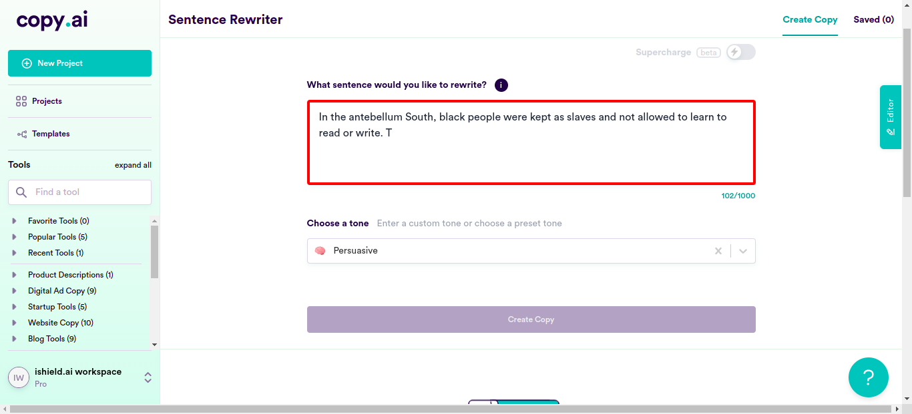check_circle 1:56:02 PM enterData
Entered Value "Despite these challenges, black Americans managed to rise up and make significant contributions to American culture" in newsentencefieldcheck_circle 1:56:02 PM explicitWaitForFieldGetVisible
Wait untill "MakeMore" got visible or upto 30 second(s)check_circle 1:56:13 PM enterData
Entered Value "the arts in particular have been greatly enriched by jazz music, blues music, gospel music, and many other genres that originated with black people." in newsentencefieldcheck_circle 1:56:13 PM explicitWaitForFieldGetVisible
Wait untill "MakeMore" got visible or upto 30 second(s)
check_circle 1:56:26 PM enterData
Entered Value "However, even despite these strides forward in equality and inclusion for black people in America, there is still significant progress to make before we can truly claim this country is a beacon of equality and liberty for all" in newsentencefieldcheck_circle 1:56:26 PM explicitWaitForFieldGetVisible
Wait untill "MakeMore" got visible or upto 30 second(s)check_circle 1:56:37 PM enterData
Entered Value ", a black student from Harvard was denied entry into his own dorm room by the police because he ""fit the description"" of someone who had broken in." in newsentencefieldcheck_circle 1:56:37 PM explicitWaitForFieldGetVisible
Wait untill "MakeMore" got visible or upto 30 second(s)
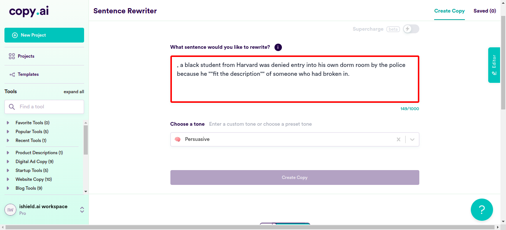check_circle 1:56:47 PM enterData
Entered Value "police are abusing their authority and targeting innocent people who are guilty of nothing more than being black in America." in newsentencefieldcheck_circle 1:56:48 PM explicitWaitForFieldGetVisible
Wait untill "MakeMore" got visible or upto 30 second(s)check_circle 1:56:57 PM enterData
Entered Value "Please sign our petition today so that we can end racial profiling once and for all!" in newsentencefieldcheck_circle 1:56:57 PM explicitWaitForFieldGetVisible
Wait untill "MakeMore" got visible or upto 30 second(s)check_circle 1:57:08 PM enterData
Entered Value "Imagine you're a young, black person in America. You grow up with a lot of adversity—your family is poor and life isn't easy." in newsentencefieldcheck_circle 1:57:08 PM explicitWaitForFieldGetVisible
Wait untill "MakeMore" got visible or upto 30 second(s)check_circle 1:57:17 PM enterData
Entered Value "Black people are not a monolith. We're not all the same" in newsentencefieldcheck_circle 1:57:18 PM explicitWaitForFieldGetVisible
Wait untill "MakeMore" got visible or upto 30 second(s)check_circle 1:57:27 PM enterData
Entered Value "There are plenty of white people who grew up in poverty" in newsentencefieldcheck_circle 1:57:27 PM explicitWaitForFieldGetVisible
Wait untill "MakeMore" got visible or upto 30 second(s)check_circle 1:57:36 PM enterData
Entered Value "black men make up less than 2% of U.S. college students" in newsentencefield
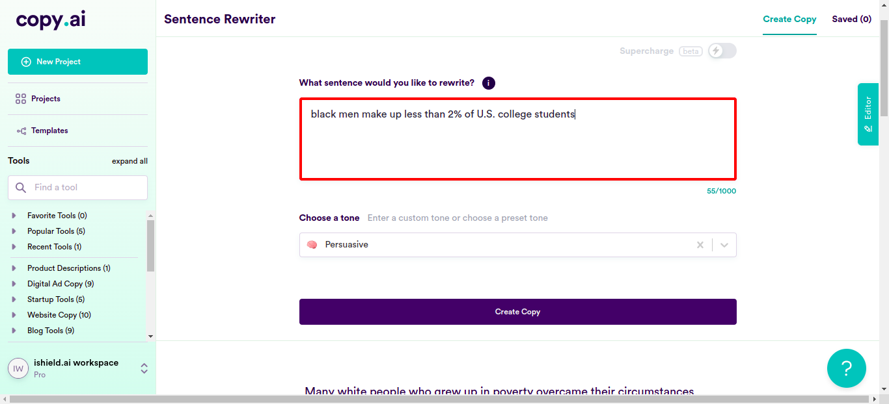check_circle 1:57:37 PM explicitWaitForFieldGetVisible
Wait untill "MakeMore" got visible or upto 30 second(s)check_circle 1:57:47 PM enterData
Entered Value "black men are 21 times more likely than white men to be shot by police officers during encounters" in newsentencefieldcheck_circle 1:57:47 PM explicitWaitForFieldGetVisible
Wait untill "MakeMore" got visible or upto 30 second(s)
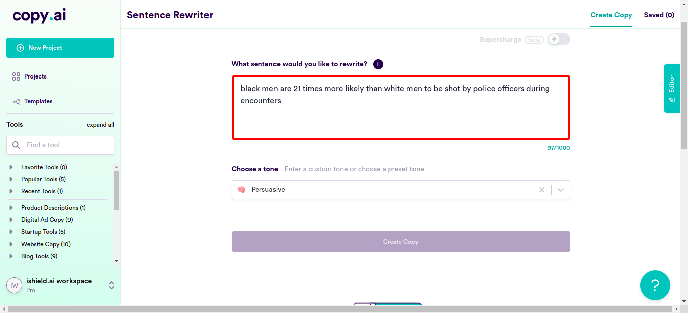check_circle 1:57:56 PM enterData
Entered Value "Black people want the same things we do: peace, happiness, and prosperity." in newsentencefieldcheck_circle 1:57:56 PM explicitWaitForFieldGetVisible
Wait untill "MakeMore" got visible or upto 30 second(s)
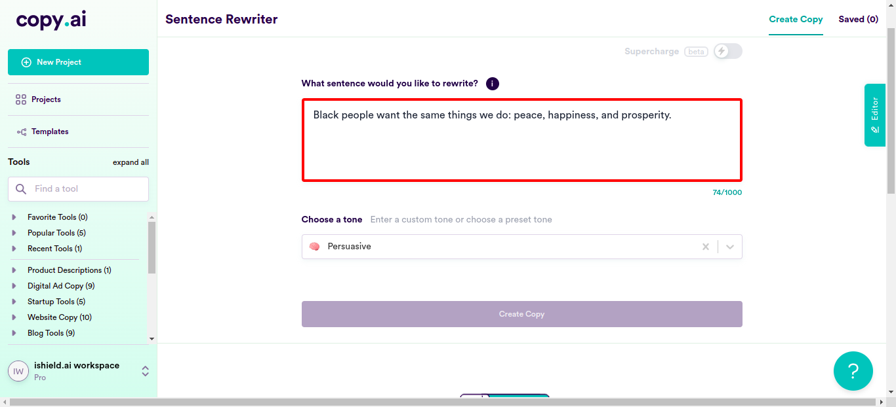check_circle 1:58:08 PM enterData
Entered Value "black people are constantly held back by the systemic racism of this country, which is one of the main reasons they can't succeed at the same rate as whites." in newsentencefieldcheck_circle 1:58:08 PM explicitWaitForFieldGetVisible
Wait untill "MakeMore" got visible or upto 30 second(s)check_circle 1:58:26 PM enterData
Entered Value "black people are underrepresented in every field of endeavor, including politics, science, business, education, and academia." in newsentencefield
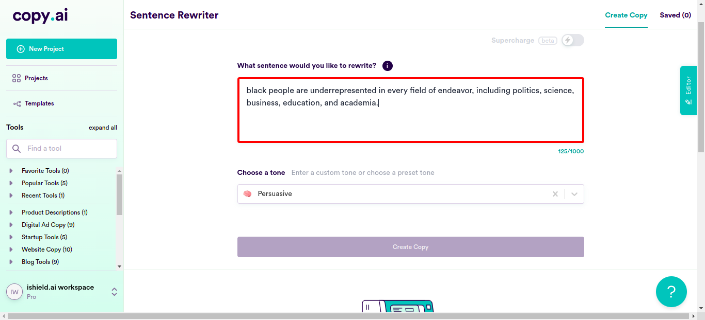check_circle 1:58:30 PM enterData
Entered Value "Black people did not invent the idea of white privilege. I" in newsentencefield
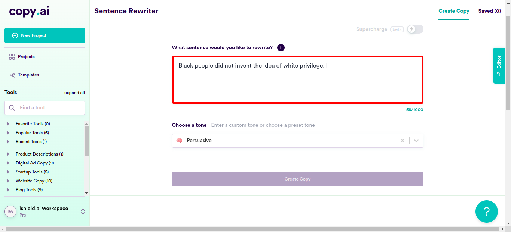check_circle 1:58:34 PM enterData
Entered Value "we don't see how our skin color makes us worthy of respect when we walk into a room," in newsentencefieldcheck_circle 1:58:34 PM explicitWaitForFieldGetVisible
Wait untill "MakeMore" got visible or upto 30 second(s)check_circle 1:58:44 PM enterData
Entered Value "It was easy for me to believe that white privilege didn't exist" in newsentencefieldcheck_circle 1:58:44 PM explicitWaitForFieldGetVisible
Wait untill "MakeMore" got visible or upto 30 second(s)check_circle 1:58:55 PM enterData
Entered Value "But I've learned from some of my black friends that there are ways in which I, as a white person, benefit from the color of my skin every single day" in newsentencefieldcheck_circle 1:58:56 PM explicitWaitForFieldGetVisible
Wait untill "MakeMore" got visible or upto 30 second(s)check_circle 1:59:07 PM enterData
Entered Value "I don't experience the same racism every day that, unfortunately, many of my black friends do" in newsentencefieldcheck_circle 1:59:07 PM explicitWaitForFieldGetVisible
Wait untill "MakeMore" got visible or upto 30 second(s)check_circle 1:59:19 PM enterData
Entered Value "I don't have to worry about being racially profiled by police or accidentally being killed by cops because of the color of my skin (this has happened to countless black people)," in newsentencefieldcheck_circle 1:59:19 PM explicitWaitForFieldGetVisible
Wait untill "MakeMore" got visible or upto 30 second(s)check_circle 1:59:30 PM enterData
Entered Value "There is a wrong notion that black men have an innate propensity for violence, which is a view that has been popularized in the media." in newsentencefieldcheck_circle 1:59:31 PM explicitWaitForFieldGetVisible
Wait untill "MakeMore" got visible or upto 30 second(s)check_circle 1:59:41 PM enterData
Entered Value "This depiction displays the idea that black men are more likely to be involved in crimes than other races." in newsentencefieldcheck_circle 1:59:41 PM explicitWaitForFieldGetVisible
Wait untill "MakeMore" got visible or upto 30 second(s)check_circle 1:59:52 PM enterData
Entered Value "the idea that black men are inherently dangerous to white people--especially white women--and should be feared at all costs." in newsentencefieldcheck_circle 1:59:52 PM explicitWaitForFieldGetVisible
Wait untill "MakeMore" got visible or upto 30 second(s)check_circle 2:00:01 PM enterData
Entered Value "It causes us to fear things we don't understand (like Black Lives Matter" in newsentencefieldcheck_circle 2:00:02 PM explicitWaitForFieldGetVisible
Wait untill "MakeMore" got visible or upto 30 second(s)check_circle 2:00:12 PM enterData
Entered Value "As a black person, I think that the idea that black men are inherently dangerous is ridiculous." in newsentencefieldcheck_circle 2:00:12 PM explicitWaitForFieldGetVisible
Wait untill "MakeMore" got visible or upto 30 second(s)
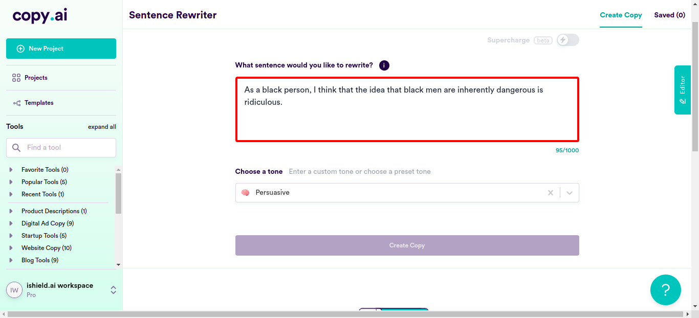check_circle 2:00:21 PM enterData
Entered Value "I am a black man and I would never hurt anyone" in newsentencefieldcheck_circle 2:00:21 PM explicitWaitForFieldGetVisible
Wait untill "MakeMore" got visible or upto 30 second(s)check_circle 2:00:31 PM enterData
Entered Value "All my friends are black men and none of us would want to hurt anybody." in newsentencefield
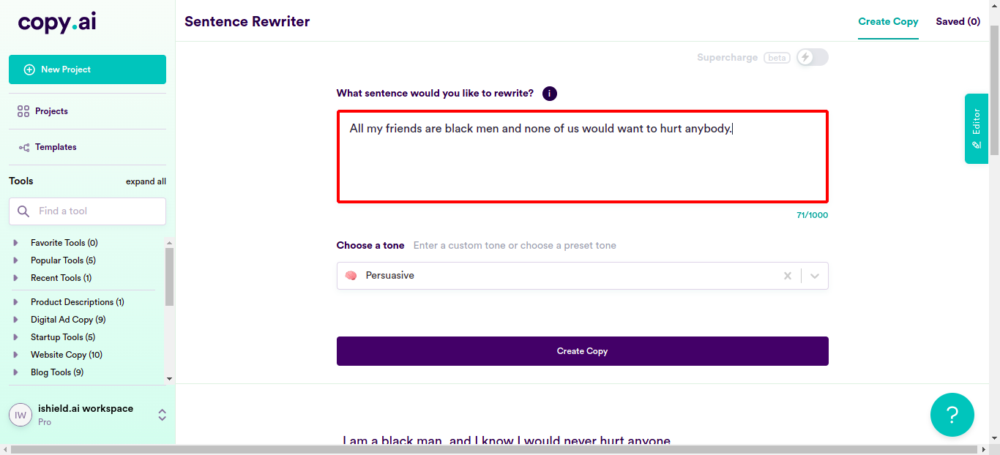check_circle 2:00:31 PM explicitWaitForFieldGetVisible
Wait untill "MakeMore" got visible or upto 30 second(s)check_circle 2:00:41 PM enterData
Entered Value "Black men are sentenced to longer terms than their white counterparts for the same crimes, including drug offenses." in newsentencefieldcheck_circle 2:00:42 PM explicitWaitForFieldGetVisible
Wait untill "MakeMore" got visible or upto 30 second(s)check_circle 2:00:51 PM enterData
Entered Value "Blacks receive sentences that are 10% longer than whites for similar crimes" in newsentencefieldcheck_circle 2:00:51 PM explicitWaitForFieldGetVisible
Wait untill "MakeMore" got visible or upto 30 second(s)check_circle 2:01:02 PM enterData
Entered Value "blacks can get up to 20% longer sentences than whites for the same crimes." in newsentencefieldcheck_circle 2:01:02 PM explicitWaitForFieldGetVisible
Wait untill "MakeMore" got visible or upto 30 second(s)
check_circle 2:01:13 PM enterData
Entered Value "Blacks are more likely to be stopped by police and searched than whites, even though they're less likely to be carrying drugs or weapons." in newsentencefieldcheck_circle 2:01:13 PM explicitWaitForFieldGetVisible
Wait untill "MakeMore" got visible or upto 30 second(s)check_circle 2:01:23 PM enterData
Entered Value "I'm not racist. I don't dislike people because of their race. That's just… wrong." in newsentencefield
check_circle 2:01:23 PM explicitWaitForFieldGetVisible
Wait untill "MakeMore" got visible or upto 30 second(s)check_circle 2:01:33 PM enterData
Entered Value "The media is frighteningly complicit in the cultural belief that black men are inherently dangerous." in newsentencefieldcheck_circle 2:01:34 PM explicitWaitForFieldGetVisible
Wait untill "MakeMore" got visible or upto 30 second(s)check_circle 2:01:45 PM enterData
Entered Value "This kind of reporting reinforces stereotypes about black men as criminals, which can result in even more discrimination for them in their day-to-day lives." in newsentencefieldcheck_circle 2:01:45 PM explicitWaitForFieldGetVisible
Wait untill "MakeMore" got visible or upto 30 second(s)check_circle 2:01:56 PM enterData
Entered Value "Black men are a diverse group of individuals who do not deserve to be put in one box based on their race and gender." in newsentencefieldcheck_circle 2:01:56 PM explicitWaitForFieldGetVisible
Wait untill "MakeMore" got visible or upto 30 second(s)check_circle 2:02:08 PM enterData
Entered Value "This can lead to higher incarceration rates for black men because they might not have access to the same resources and opportunities available to white men" in newsentencefieldcheck_circle 2:02:08 PM explicitWaitForFieldGetVisible
Wait untill "MakeMore" got visible or upto 30 second(s)check_circle 2:02:18 PM enterData
Entered Value "The stereotypes about black men being dangerous have a real impact on how people see them" in newsentencefieldcheck_circle 2:02:18 PM explicitWaitForFieldGetVisible
Wait untill "MakeMore" got visible or upto 30 second(s)check_circle 2:02:27 PM enterData
Entered Value "We know that black men are not inherently dangerous." in newsentencefieldcheck_circle 2:02:28 PM explicitWaitForFieldGetVisible
Wait untill "MakeMore" got visible or upto 30 second(s)check_circle 2:02:39 PM enterData
Entered Value "Black men are husbands, brothers, sons, uncles, grandfathers, cousins. They are teachers and doctors and janitors and cab drivers and politicians" in newsentencefieldcheck_circle 2:02:39 PM explicitWaitForFieldGetVisible
Wait untill "MakeMore" got visible or upto 30 second(s)check_circle 2:02:50 PM enterData
Entered Value "we can change how we see black men in our communities: as part of our community, rather than an enemy within it" in newsentencefieldcheck_circle 2:02:50 PM explicitWaitForFieldGetVisible
Wait untill "MakeMore" got visible or upto 30 second(s)check_circle 2:03:01 PM enterData
Entered Value "we can use that new vision to inform how we treat black men in public and private spaces: as individuals worthy of respect rather than fear." in newsentencefieldcheck_circle 2:03:01 PM explicitWaitForFieldGetVisible
Wait untill "MakeMore" got visible or upto 30 second(s)check_circle 2:03:11 PM enterData
Entered Value "I want you to imagine that you're a 30-year-old black man" in newsentencefield
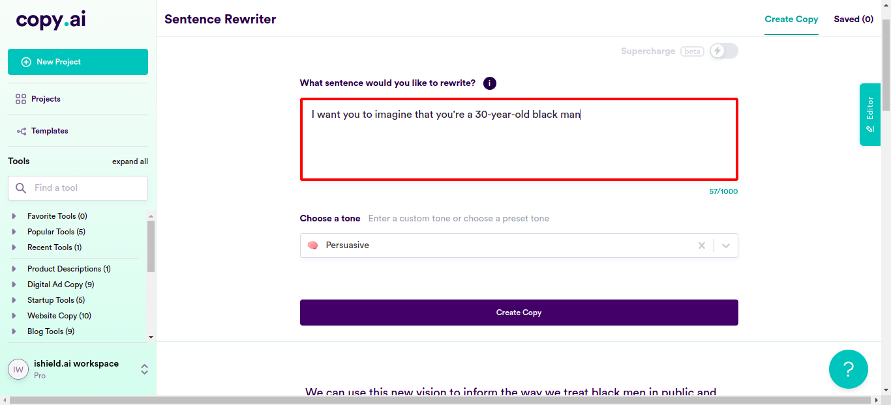check_circle 2:03:11 PM explicitWaitForFieldGetVisible
Wait untill "MakeMore" got visible or upto 30 second(s)
check_circle 2:03:22 PM enterData
Entered Value "A recent article by The New York Times argues that, in the United States, black men are seen as "guilty until proven innocent."" in newsentencefieldcheck_circle 2:03:22 PM explicitWaitForFieldGetVisible
Wait untill "MakeMore" got visible or upto 30 second(s)check_circle 2:03:33 PM enterData
Entered Value "The color of a person's skin should have nothing to do with how dangerous they are—it's a choice to be violent or aggressive!" in newsentencefieldcheck_circle 2:03:34 PM explicitWaitForFieldGetVisible
Wait untill "MakeMore" got visible or upto 30 second(s)check_circle 2:03:45 PM enterData
Entered Value "This type of prejudice has led to many tragedies: false arrests and imprisonment, police brutality, racial profiling and discrimination." in newsentencefieldcheck_circle 2:03:45 PM explicitWaitForFieldGetVisible
Wait untill "MakeMore" got visible or upto 30 second(s)check_circle 2:03:55 PM enterData
Entered Value "We need to stop automatically assuming that someone's skin color dictates their moral character." in newsentencefield
check_circle 2:03:55 PM explicitWaitForFieldGetVisible
Wait untill "MakeMore" got visible or upto 30 second(s)check_circle 2:04:05 PM enterData
Entered Value "Some people are claiming that black men are inherently dangerous. We don't agree." in newsentencefieldcheck_circle 2:04:06 PM explicitWaitForFieldGetVisible
Wait untill "MakeMore" got visible or upto 30 second(s)check_circle 2:04:19 PM enterData
Entered Value "While we acknowledge that there is a history of racial discrimination in this country and that the justice system is still not perfect, it is our belief that black men are no more dangerous than any other group of people." in newsentencefieldcheck_circle 2:04:19 PM explicitWaitForFieldGetVisible
Wait untill "MakeMore" got visible or upto 30 second(s)
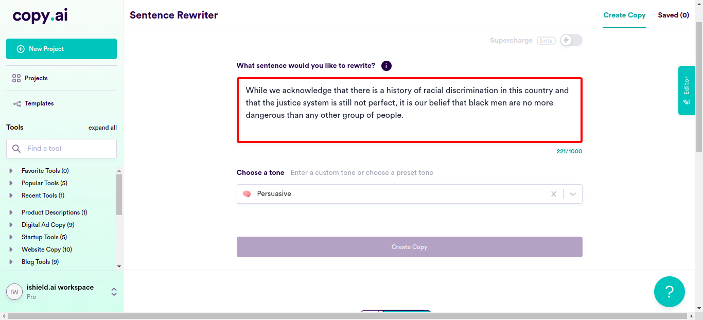check_circle 2:04:30 PM enterData
Entered Value "It's not about the color of their skin or where they come from; rather, it's about the actions they take." in newsentencefieldcheck_circle 2:04:30 PM explicitWaitForFieldGetVisible
Wait untill "MakeMore" got visible or upto 30 second(s)check_circle 2:04:43 PM enterData
Entered Value "The narrative that black men are inherently dangerous has been used as a justification for years to lock up and otherwise oppress young black men. They are seen as more of a threat, even when they're not." in newsentencefieldcheck_circle 2:04:43 PM explicitWaitForFieldGetVisible
Wait untill "MakeMore" got visible or upto 30 second(s)check_circle 2:04:54 PM enterData
Entered Value "And the assumption that black men are more dangerous than other groups is so widespread that it has become a social norm." in newsentencefieldcheck_circle 2:04:54 PM explicitWaitForFieldGetVisible
Wait untill "MakeMore" got visible or upto 30 second(s)check_circle 2:05:05 PM enterData
Entered Value "there is no credible evidence to suggest that black men are inherently more dangerous than any other group." in newsentencefieldcheck_circle 2:05:05 PM explicitWaitForFieldGetVisible
Wait untill "MakeMore" got visible or upto 30 second(s)check_circle 2:05:15 PM enterData
Entered Value "Every day, the headlines tell us another story about a black man who has been shot by police" in newsentencefieldcheck_circle 2:05:16 PM explicitWaitForFieldGetVisible
Wait untill "MakeMore" got visible or upto 30 second(s)
check_circle 2:05:26 PM enterData
Entered Value "In fact, as early as the 1600s, Black people were considered inherently dangerous by law in America." in newsentencefieldcheck_circle 2:05:26 PM explicitWaitForFieldGetVisible
Wait untill "MakeMore" got visible or upto 30 second(s)check_circle 2:05:36 PM enterData
Entered Value "In the wake of yet another event in which a Black man was shot by police" in newsentencefieldcheck_circle 2:05:36 PM explicitWaitForFieldGetVisible
Wait untill "MakeMore" got visible or upto 30 second(s)check_circle 2:05:47 PM enterData
Entered Value "If you are black and male, in the eyes of far too many Americans, you are automatically dangerous." in newsentencefieldcheck_circle 2:05:47 PM explicitWaitForFieldGetVisible
Wait untill "MakeMore" got visible or upto 30 second(s)check_circle 2:20:50 PM enterData
Entered Value "Or you can teach me a few things." in newsentencefieldcheck_circle 2:20:50 PM explicitWaitForFieldGetVisible
Wait untill "MakeMore" got visible or upto 30 second(s)check_circle 2:21:00 PM enterData
Entered Value "The right otocyst is seen at the root of the foot." in newsentencefieldcheck_circle 2:21:00 PM explicitWaitForFieldGetVisible
Wait untill "MakeMore" got visible or upto 30 second(s)check_circle 2:21:09 PM enterData
Entered Value "Most of them were no more than one night stands." in newsentencefield
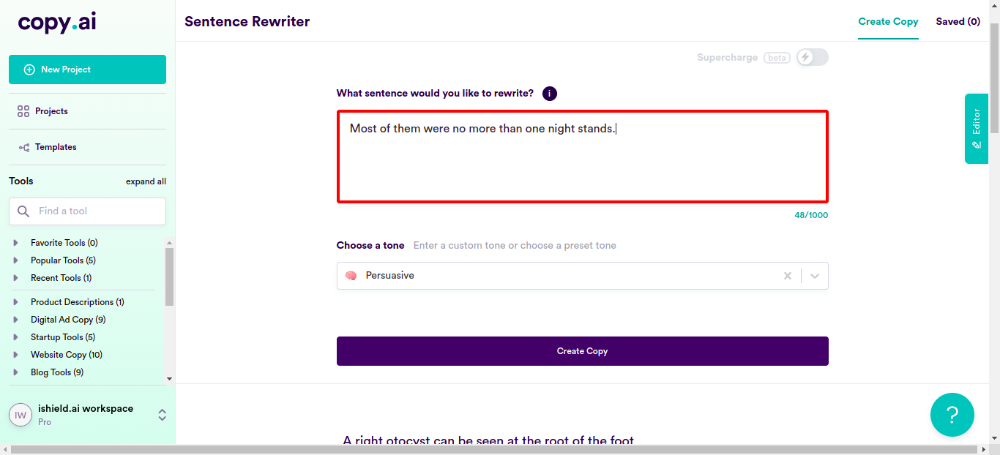check_circle 2:21:09 PM explicitWaitForFieldGetVisible
Wait untill "MakeMore" got visible or upto 30 second(s)check_circle 2:21:19 PM enterData
Entered Value "Besides, the Norfolk cops said the guy had a snoot-full of booze." in newsentencefieldcheck_circle 2:21:19 PM explicitWaitForFieldGetVisible
Wait untill "MakeMore" got visible or upto 30 second(s)check_circle 2:21:29 PM enterData
Entered Value "The stability of benzene is ascribed to this conjugation.'" in newsentencefield
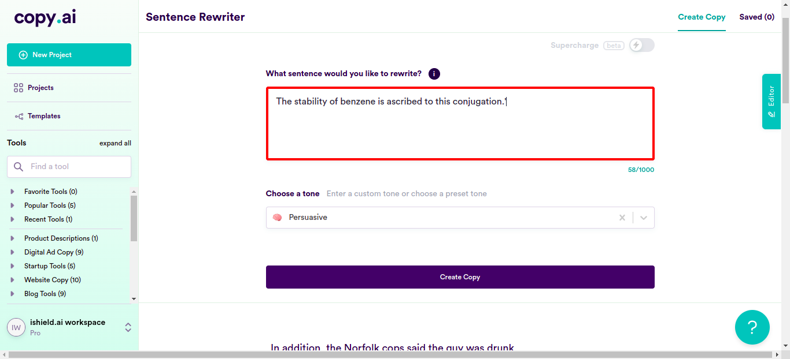check_circle 2:21:29 PM explicitWaitForFieldGetVisible
Wait untill "MakeMore" got visible or upto 30 second(s)check_circle 2:21:39 PM enterData
Entered Value "Winston, still smiling, pulled up a chair and sat in it backwards facing Dean." in newsentencefield
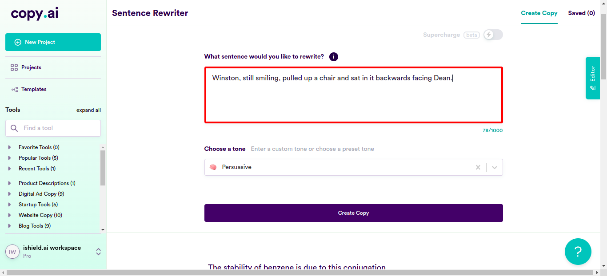check_circle 2:21:39 PM explicitWaitForFieldGetVisible
Wait untill "MakeMore" got visible or upto 30 second(s)check_circle 2:21:48 PM enterData
Entered Value "He's quick to apologize but his regrets sometimes lack sincerity." in newsentencefieldcheck_circle 2:21:49 PM explicitWaitForFieldGetVisible
Wait untill "MakeMore" got visible or upto 30 second(s)check_circle 2:21:59 PM enterData
Entered Value "This page gives an overview of all articles in the 1911 Brittanica which are alphabetized under Het to Hir." in newsentencefieldcheck_circle 2:22:00 PM explicitWaitForFieldGetVisible
Wait untill "MakeMore" got visible or upto 30 second(s)check_circle 2:22:13 PM enterData
Entered Value "The general type of problem is to find two, three or four numbers such that different expressions involving them in the first and second, and sometimes the third, degree are squares, cubes, partly squares and partly cubes, &c. E.g." in newsentencefieldcheck_circle 2:22:13 PM explicitWaitForFieldGetVisible
Wait untill "MakeMore" got visible or upto 30 second(s)
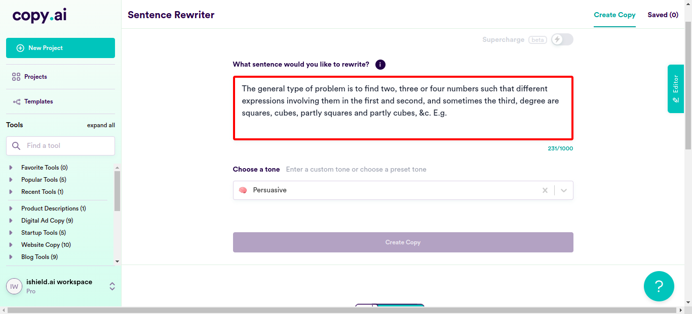check_circle 2:22:26 PM enterData
Entered Value "China pulled out all the stops, dividing its farmland into about twenty-five thousand collective farms with an average of five thousand households each." in newsentencefieldcheck_circle 2:22:26 PM explicitWaitForFieldGetVisible
Wait untill "MakeMore" got visible or upto 30 second(s)check_circle 2:22:35 PM enterData
Entered Value "Let's adopt it legally." in newsentencefieldcheck_circle 2:22:35 PM explicitWaitForFieldGetVisible
Wait untill "MakeMore" got visible or upto 30 second(s)
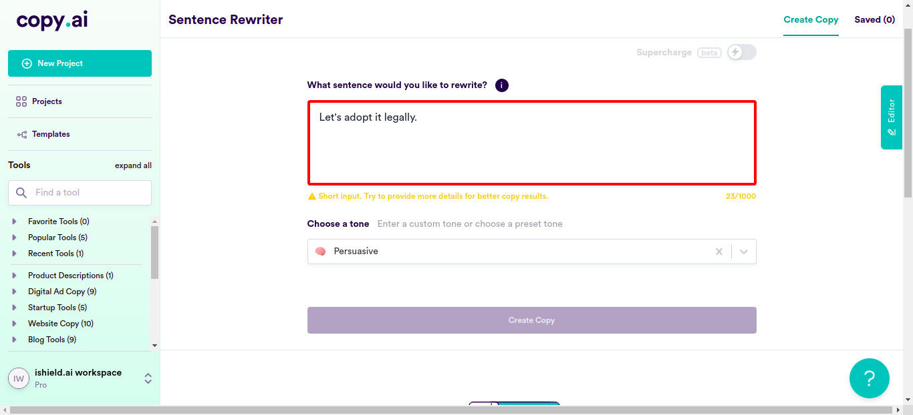check_circle 2:22:48 PM enterData
Entered Value "This sort of panic creates a self-fulfilling prophecy; if large numbers of customers begin withdrawing their money from a bank, the institution can be destabilized and the risk of default increases." in newsentencefieldcheck_circle 2:22:48 PM explicitWaitForFieldGetVisible
Wait untill "MakeMore" got visible or upto 30 second(s)check_circle 2:23:00 PM enterData
Entered Value "The child's problems may bring back feelings of frustration and failure for parents, which may interfere with their parenting skills." in newsentencefieldcheck_circle 2:23:00 PM explicitWaitForFieldGetVisible
Wait untill "MakeMore" got visible or upto 30 second(s)check_circle 2:23:10 PM enterData
Entered Value "He introduced into medical theory the four causes of the Peripatetic system." in newsentencefieldcheck_circle 2:23:10 PM explicitWaitForFieldGetVisible
Wait untill "MakeMore" got visible or upto 30 second(s)check_circle 2:23:21 PM enterData
Entered Value "They had given Martha a telephone card and asked she contact them as soon and as often as she could." in newsentencefieldcheck_circle 2:23:21 PM explicitWaitForFieldGetVisible
Wait untill "MakeMore" got visible or upto 30 second(s)check_circle 2:23:32 PM enterData
Entered Value "They didn't enter war to satisfy a desire to kill and maim but to be victorious in the way their society rewarded." in newsentencefieldcheck_circle 2:23:32 PM explicitWaitForFieldGetVisible
Wait untill "MakeMore" got visible or upto 30 second(s)
check_circle 2:23:42 PM enterData
Entered Value "In my mind, that speaks of organizing, not the kind of behavior Edith Shipton has demonstrated." in newsentencefieldcheck_circle 2:23:43 PM explicitWaitForFieldGetVisible
Wait untill "MakeMore" got visible or upto 30 second(s)
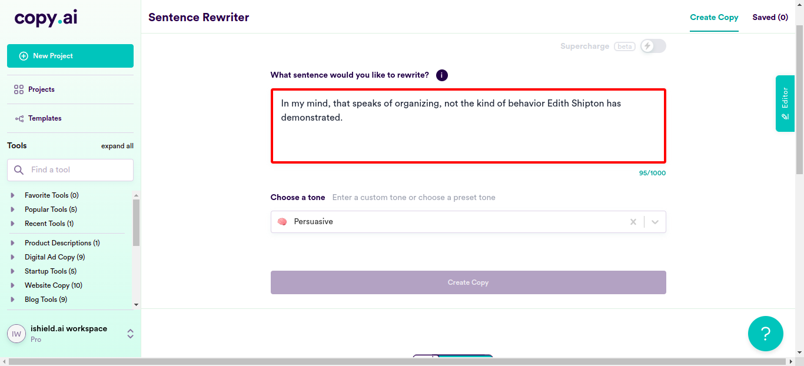check_circle 2:23:53 PM enterData
Entered Value "Don't be fooled into squandering your profit by trying to make your business look successful." in newsentencefieldcheck_circle 2:23:53 PM explicitWaitForFieldGetVisible
Wait untill "MakeMore" got visible or upto 30 second(s)
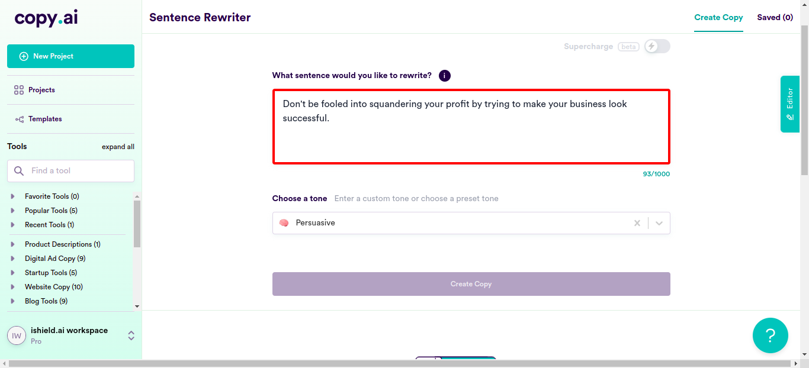check_circle 2:24:05 PM enterData
Entered Value "She saw her death at the hands of Taran, not in the hands of the barbarians!" in newsentencefieldcheck_circle 2:24:05 PM explicitWaitForFieldGetVisible
Wait untill "MakeMore" got visible or upto 30 second(s)check_circle 2:24:15 PM enterData
Entered Value "This might be the most difficult decision she would ever make." in newsentencefield
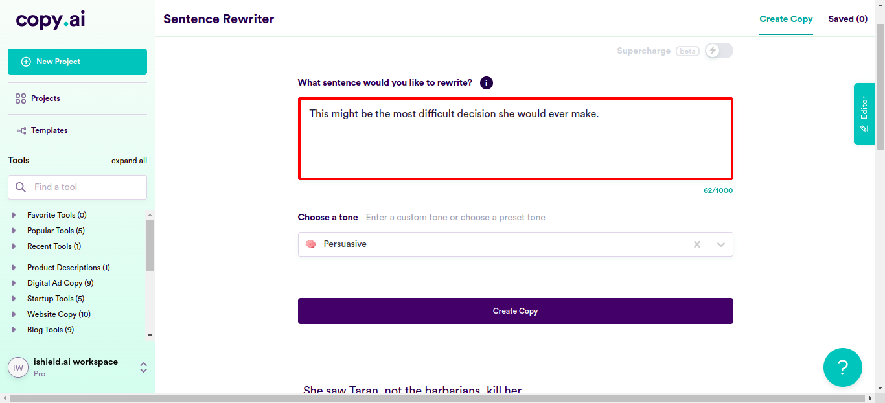check_circle 2:24:15 PM explicitWaitForFieldGetVisible
Wait untill "MakeMore" got visible or upto 30 second(s)check_circle 2:24:24 PM enterData
Entered Value "One must pity the animals too." in newsentencefieldcheck_circle 2:24:24 PM explicitWaitForFieldGetVisible
Wait untill "MakeMore" got visible or upto 30 second(s)check_circle 2:24:35 PM enterData
Entered Value "The Peronosporaceae reproduce themselves sexually by means of antheridia and oogonia as described in Pythium." in newsentencefieldcheck_circle 2:24:35 PM explicitWaitForFieldGetVisible
Wait untill "MakeMore" got visible or upto 30 second(s)check_circle 2:24:44 PM enterData
Entered Value "The horses moved off the bank." in newsentencefieldcheck_circle 2:24:44 PM explicitWaitForFieldGetVisible
Wait untill "MakeMore" got visible or upto 30 second(s)
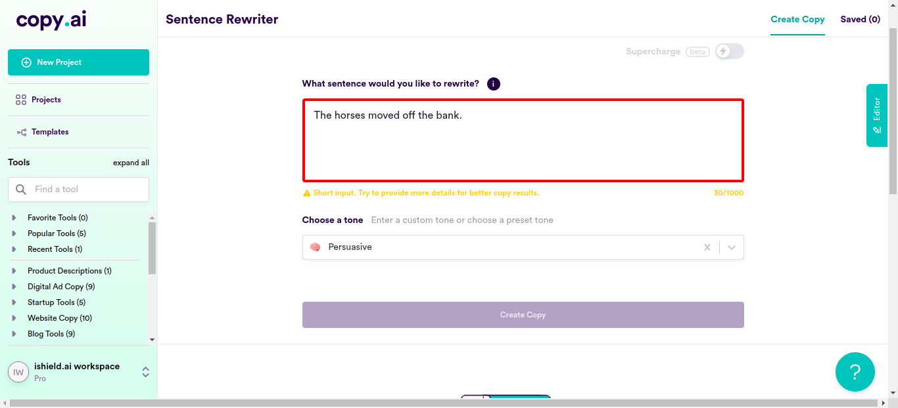check_circle 2:24:59 PM enterData
Entered Value "In a refined form this method is often employed for measuring the intensity of a magnetic field at a given place, just as the intensity of gravity at different parts of the earth is deduced from observations of the rate at which a pendulum of known length vibrates." in newsentencefieldcheck_circle 2:24:59 PM explicitWaitForFieldGetVisible
Wait untill "MakeMore" got visible or upto 30 second(s)check_circle 2:25:09 PM enterData
Entered Value "Steven is introduced to an unbelievably sexy lady vampire called Yakshi." in newsentencefield
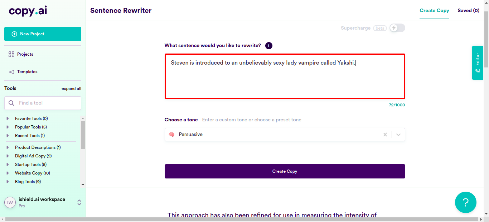check_circle 2:25:09 PM explicitWaitForFieldGetVisible
Wait untill "MakeMore" got visible or upto 30 second(s)check_circle 2:25:24 PM enterData
Entered Value "See Strutt, Sports and Pastimes, who also gives an illustration, "taken from a manuscriptal painting of the 9th century in the Cotton Library," representing "a Saxon chieftain, attended by his huntsman and a couple of hounds, pursuing the wild swine in a forest."" in newsentencefieldcheck_circle 2:25:24 PM explicitWaitForFieldGetVisible
Wait untill "MakeMore" got visible or upto 30 second(s)check_circle 2:25:33 PM enterData
Entered Value "It costs more than it comes to." in newsentencefieldcheck_circle 2:25:33 PM explicitWaitForFieldGetVisible
Wait untill "MakeMore" got visible or upto 30 second(s)check_circle 2:25:43 PM enterData
Entered Value "He parked the truck in front of the house and headed down the hill." in newsentencefieldcheck_circle 2:25:43 PM explicitWaitForFieldGetVisible
Wait untill "MakeMore" got visible or upto 30 second(s)check_circle 2:25:55 PM enterData
Entered Value "This line of experiment came out of a fusion of bacterial genetics with the biochemical characterization of an inducible system of sugar metabolizing enzymes." in newsentencefieldcheck_circle 2:25:56 PM explicitWaitForFieldGetVisible
Wait untill "MakeMore" got visible or upto 30 second(s)check_circle 2:26:09 PM enterData
Entered Value "Just then the buggy tipped slowly over upon its side, the body of the horse tipping also." in newsentencefieldcheck_circle 2:26:10 PM explicitWaitForFieldGetVisible
Wait untill "MakeMore" got visible or upto 30 second(s)check_circle 2:26:28 PM enterData
Entered Value "Round the circlet is the singularly inappropriate text from Psalm li., "Miserere mei Deus secundum magnam misericordiam tuam."" in newsentencefieldcheck_circle 2:26:28 PM explicitWaitForFieldGetVisible
Wait untill "MakeMore" got visible or upto 30 second(s)check_circle 2:26:45 PM enterData
Entered Value "The formidable opponent was extremely intimidating to the young basketball team." in newsentencefieldcheck_circle 2:26:45 PM explicitWaitForFieldGetVisible
Wait untill "MakeMore" got visible or upto 30 second(s)check_circle 2:26:56 PM enterData
Entered Value "The key Howie had left fit the door in the rear so I couldn't rely on my headlights to see." in newsentencefieldcheck_circle 2:26:56 PM explicitWaitForFieldGetVisible
Wait untill "MakeMore" got visible or upto 30 second(s)cancel 2:27:03 PM Exception Occured:Click to see
[com.ttn.WebAutomation.pageObjects.Slack.senddatafromcsv(Slack.java:119)
com.ttn.WebAutomation.tests.tsp.test.clicklogin(test.java:31)
java.base/jdk.internal.reflect.NativeMethodAccessorImpl.invoke0(Native Method)
java.base/jdk.internal.reflect.NativeMethodAccessorImpl.invoke(NativeMethodAccessorImpl.java:62)
java.base/jdk.internal.reflect.DelegatingMethodAccessorImpl.invoke(DelegatingMethodAccessorImpl.java:43)
java.base/java.lang.reflect.Method.invoke(Method.java:566)
org.testng.internal.MethodInvocationHelper.invokeMethod(MethodInvocationHelper.java:134)
org.testng.internal.TestInvoker.invokeMethod(TestInvoker.java:597)
org.testng.internal.TestInvoker.invokeTestMethod(TestInvoker.java:173)
org.testng.internal.MethodRunner.runInSequence(MethodRunner.java:46)
org.testng.internal.TestInvoker$MethodInvocationAgent.invoke(TestInvoker.java:816)
org.testng.internal.TestInvoker.invokeTestMethods(TestInvoker.java:146)
org.testng.internal.TestMethodWorker.invokeTestMethods(TestMethodWorker.java:146)
org.testng.internal.TestMethodWorker.run(TestMethodWorker.java:128)
java.base/java.util.ArrayList.forEach(ArrayList.java:1541)
org.testng.TestRunner.privateRun(TestRunner.java:766)
org.testng.TestRunner.run(TestRunner.java:587)
org.testng.SuiteRunner.runTest(SuiteRunner.java:384)
org.testng.SuiteRunner.runSequentially(SuiteRunner.java:378)
org.testng.SuiteRunner.privateRun(SuiteRunner.java:337)
org.testng.SuiteRunner.run(SuiteRunner.java:286)
org.testng.SuiteRunnerWorker.runSuite(SuiteRunnerWorker.java:53)
org.testng.SuiteRunnerWorker.run(SuiteRunnerWorker.java:96)
org.testng.TestNG.runSuitesSequentially(TestNG.java:1187)
org.testng.TestNG.runSuitesLocally(TestNG.java:1109)
org.testng.TestNG.runSuites(TestNG.java:1039)
org.testng.TestNG.run(TestNG.java:1007)
com.intellij.rt.testng.IDEARemoteTestNG.run(IDEARemoteTestNG.java:66)
com.intellij.rt.testng.RemoteTestNGStarter.main(RemoteTestNGStarter.java:109)]cancel 2:27:03 PM clicklogin FAILED cancel 2:27:03 PM java.lang.ArrayIndexOutOfBoundsException: Index 1000 out of bounds for length 1000 at com.ttn.WebAutomation.pageObjects.Slack.senddatafromcsv(Slack.java:119) at com.ttn.WebAutomation.tests.tsp.test.clicklogin(test.java:31) at java.base/jdk.internal.reflect.NativeMethodAccessorImpl.invoke0(Native Method) at java.base/jdk.internal.reflect.NativeMethodAccessorImpl.invoke(NativeMethodAccessorImpl.java:62) at java.base/jdk.internal.reflect.DelegatingMethodAccessorImpl.invoke(DelegatingMethodAccessorImpl.java:43) at java.base/java.lang.reflect.Method.invoke(Method.java:566) at org.testng.internal.MethodInvocationHelper.invokeMethod(MethodInvocationHelper.java:134) at org.testng.internal.TestInvoker.invokeMethod(TestInvoker.java:597) at org.testng.internal.TestInvoker.invokeTestMethod(TestInvoker.java:173) at org.testng.internal.MethodRunner.runInSequence(MethodRunner.java:46) at org.testng.internal.TestInvoker$MethodInvocationAgent.invoke(TestInvoker.java:816) at org.testng.internal.TestInvoker.invokeTestMethods(TestInvoker.java:146) at org.testng.internal.TestMethodWorker.invokeTestMethods(TestMethodWorker.java:146) at org.testng.internal.TestMethodWorker.run(TestMethodWorker.java:128) at java.base/java.util.ArrayList.forEach(ArrayList.java:1541) at org.testng.TestRunner.privateRun(TestRunner.java:766) at org.testng.TestRunner.run(TestRunner.java:587) at org.testng.SuiteRunner.runTest(SuiteRunner.java:384) at org.testng.SuiteRunner.runSequentially(SuiteRunner.java:378) at org.testng.SuiteRunner.privateRun(SuiteRunner.java:337) at org.testng.SuiteRunner.run(SuiteRunner.java:286) at org.testng.SuiteRunnerWorker.runSuite(SuiteRunnerWorker.java:53) at org.testng.SuiteRunnerWorker.run(SuiteRunnerWorker.java:96) at org.testng.TestNG.runSuitesSequentially(TestNG.java:1187) at org.testng.TestNG.runSuitesLocally(TestNG.java:1109) at org.testng.TestNG.runSuites(TestNG.java:1039) at org.testng.TestNG.run(TestNG.java:1007) at com.intellij.rt.testng.IDEARemoteTestNG.run(IDEARemoteTestNG.java:66) at com.intellij.rt.testng.RemoteTestNGStarter.main(RemoteTestNGStarter.java:109)
cancel 2:27:03 PM ArrayIndexOutOfBoundsException info_outline 2:27:03 PM Test Completed cancel 2:27:03 PM clicklogin - Test Case Failed cancel 2:27:03 PM java.lang.ArrayIndexOutOfBoundsException: Index 1000 out of bounds for length 1000 - Test Case Failed
-
-
info_outline
check_circle
cancel
cancel
error
warning
redo
clear
Exceptions
-
java.lang.ArrayIndexOutOfBoundsException
1
Timestamp
TestName
Status
May 27, 2022 13:30:50
Running on Chrome.test.clicklogin
java.lang.ArrayIndexOutOfBoundsException: Index 1000 out of bounds for length 1000
at com.ttn.WebAutomation.pageObjects.Slack.senddatafromcsv(Slack.java:119)
at com.ttn.WebAutomation.tests.tsp.test.clicklogin(test.java:31)
at java.base/jdk.internal.reflect.NativeMethodAccessorImpl.invoke0(Native Method)
at java.base/jdk.internal.reflect.NativeMethodAccessorImpl.invoke(NativeMethodAccessorImpl.java:62)
at java.base/jdk.internal.reflect.DelegatingMethodAccessorImpl.invoke(DelegatingMethodAccessorImpl.java:43)
at java.base/java.lang.reflect.Method.invoke(Method.java:566)
at org.testng.internal.MethodInvocationHelper.invokeMethod(MethodInvocationHelper.java:134)
at org.testng.internal.TestInvoker.invokeMethod(TestInvoker.java:597)
at org.testng.internal.TestInvoker.invokeTestMethod(TestInvoker.java:173)
at org.testng.internal.MethodRunner.runInSequence(MethodRunner.java:46)
at org.testng.internal.TestInvoker$MethodInvocationAgent.invoke(TestInvoker.java:816)
at org.testng.internal.TestInvoker.invokeTestMethods(TestInvoker.java:146)
at org.testng.internal.TestMethodWorker.invokeTestMethods(TestMethodWorker.java:146)
at org.testng.internal.TestMethodWorker.run(TestMethodWorker.java:128)
at java.base/java.util.ArrayList.forEach(ArrayList.java:1541)
at org.testng.TestRunner.privateRun(TestRunner.java:766)
at org.testng.TestRunner.run(TestRunner.java:587)
at org.testng.SuiteRunner.runTest(SuiteRunner.java:384)
at org.testng.SuiteRunner.runSequentially(SuiteRunner.java:378)
at org.testng.SuiteRunner.privateRun(SuiteRunner.java:337)
at org.testng.SuiteRunner.run(SuiteRunner.java:286)
at org.testng.SuiteRunnerWorker.runSuite(SuiteRunnerWorker.java:53)
at org.testng.SuiteRunnerWorker.run(SuiteRunnerWorker.java:96)
at org.testng.TestNG.runSuitesSequentially(TestNG.java:1187)
at org.testng.TestNG.runSuitesLocally(TestNG.java:1109)
at org.testng.TestNG.runSuites(TestNG.java:1039)
at org.testng.TestNG.run(TestNG.java:1007)
at com.intellij.rt.testng.IDEARemoteTestNG.run(IDEARemoteTestNG.java:66)
at com.intellij.rt.testng.RemoteTestNGStarter.main(RemoteTestNGStarter.java:109)
java.lang.ArrayIndexOutOfBoundsException
1
| Timestamp | TestName | Status |
|---|---|---|
| May 27, 2022 13:30:50 | Running on Chrome.test.clicklogin | java.lang.ArrayIndexOutOfBoundsException: Index 1000 out of bounds for length 1000 at com.ttn.WebAutomation.pageObjects.Slack.senddatafromcsv(Slack.java:119) at com.ttn.WebAutomation.tests.tsp.test.clicklogin(test.java:31) at java.base/jdk.internal.reflect.NativeMethodAccessorImpl.invoke0(Native Method) at java.base/jdk.internal.reflect.NativeMethodAccessorImpl.invoke(NativeMethodAccessorImpl.java:62) at java.base/jdk.internal.reflect.DelegatingMethodAccessorImpl.invoke(DelegatingMethodAccessorImpl.java:43) at java.base/java.lang.reflect.Method.invoke(Method.java:566) at org.testng.internal.MethodInvocationHelper.invokeMethod(MethodInvocationHelper.java:134) at org.testng.internal.TestInvoker.invokeMethod(TestInvoker.java:597) at org.testng.internal.TestInvoker.invokeTestMethod(TestInvoker.java:173) at org.testng.internal.MethodRunner.runInSequence(MethodRunner.java:46) at org.testng.internal.TestInvoker$MethodInvocationAgent.invoke(TestInvoker.java:816) at org.testng.internal.TestInvoker.invokeTestMethods(TestInvoker.java:146) at org.testng.internal.TestMethodWorker.invokeTestMethods(TestMethodWorker.java:146) at org.testng.internal.TestMethodWorker.run(TestMethodWorker.java:128) at java.base/java.util.ArrayList.forEach(ArrayList.java:1541) at org.testng.TestRunner.privateRun(TestRunner.java:766) at org.testng.TestRunner.run(TestRunner.java:587) at org.testng.SuiteRunner.runTest(SuiteRunner.java:384) at org.testng.SuiteRunner.runSequentially(SuiteRunner.java:378) at org.testng.SuiteRunner.privateRun(SuiteRunner.java:337) at org.testng.SuiteRunner.run(SuiteRunner.java:286) at org.testng.SuiteRunnerWorker.runSuite(SuiteRunnerWorker.java:53) at org.testng.SuiteRunnerWorker.run(SuiteRunnerWorker.java:96) at org.testng.TestNG.runSuitesSequentially(TestNG.java:1187) at org.testng.TestNG.runSuitesLocally(TestNG.java:1109) at org.testng.TestNG.runSuites(TestNG.java:1039) at org.testng.TestNG.run(TestNG.java:1007) at com.intellij.rt.testng.IDEARemoteTestNG.run(IDEARemoteTestNG.java:66) at com.intellij.rt.testng.RemoteTestNGStarter.main(RemoteTestNGStarter.java:109) |
Dashboard
Classes
1
Tests
1
Steps
481
Start
May 27, 2022 13:30:45
End
May 27, 2022 14:27:04
Time Taken
3,378,999ms
Environment
| Name | Value |
|---|---|
| Application Name | Demo |
| User Name | Demo |
| Environment | uat |
| OS | Linux |